<!doctype html>
<html lang="en">
<head>
  <meta charset="utf-8">
  <meta name="viewport" content="width=device-width, initial-scale=1">
  <title>arxiv digest — 2026-10-17</title>
  <style>
:root {
  --bg: #ffffff;
  --fg: #1f2328;
  --muted: #59636e;
  --border: #d0d7de;
  --card: #f6f8fa;
  --link: #0969da;
}
body {
  max-width: 980px;
  margin: 0 auto;
  padding: 2rem 1rem 5rem;
  font-family: -apple-system, BlinkMacSystemFont, "Segoe UI", Helvetica, Arial, sans-serif;
  line-height: 1.55;
  color: var(--fg);
  background: var(--bg);
}
a { color: var(--link); }
img { max-width: 100%; height: auto; }
pre, code { background: var(--card); border-radius: 6px; }
pre { padding: 1rem; overflow-x: auto; }
blockquote { border-left: 4px solid var(--border); padding-left: 1rem; color: var(--muted); }
details { margin: 0.6rem 0; }
summary { cursor: pointer; font-weight: 600; }
.paper-figures-scroll {
  display: flex;
  gap: 1rem;
  overflow-x: auto;
  overscroll-behavior-x: contain;
  padding: 0.75rem 0.25rem 1rem;
  margin: 1rem 0 1.25rem;
  border-top: 1px solid var(--border);
  border-bottom: 1px solid var(--border);
  scroll-snap-type: x proximity;
}
.paper-figure-card {
  flex: 0 0 min(260px, 72vw);
  scroll-snap-align: start;
  background: var(--card);
  border: 1px solid var(--border);
  border-radius: 12px;
  padding: 0.55rem;
}
.paper-figure-card img {
  display: block;
  width: 100%;
  max-height: 240px;
  object-fit: contain;
  background: white;
  border-radius: 8px;
}
.paper-figure-caption {
  display: block;
  margin-top: 0.5rem;
  color: var(--muted);
  font-size: 0.85rem;
}
.figure-strip-hint {
  color: var(--muted);
  font-size: 0.9rem;
  margin-bottom: -0.3rem;
}
</style>
  <script>
    window.MathJax = {
      tex: {
        inlineMath: [['$', '$'], ['\\(', '\\)']],
        displayMath: [['$$', '$$'], ['\\[', '\\]']],
        processEscapes: true,
        processEnvironments: true
      },
      options: {
        skipHtmlTags: ['script', 'noscript', 'style', 'textarea', 'pre', 'code'],
        ignoreHtmlClass: 'tex2jax_ignore',
        processHtmlClass: 'tex2jax_process'
      }
    };
  </script>
  <script id="MathJax-script" async
    src="https://cdn.jsdelivr.net/npm/mathjax@3/es5/tex-chtml.js"></script>
</head>
<body>
<header style="background-color: #333; color: white; padding: 15px; margin-bottom: 20px;">
  <h1 style="margin: 0; font-size: 24px;">
    <a href="https://ochelpan.github.io/arXiv_clean/" style="color: white; text-decoration: none;">Main</a>
  </h1>
</header>

<h1>Daily arXiv Report</h1>

<hr>
<p>
<a href="index.html">← Index</a>
 · <a href="papers_02.html">← Previous</a> · <a href="papers_04.html">Next →</a>
</p>
<hr>

<h2>Papers 41–60</h2>
<p><a id="paper-2610.21557"></a></p>
<h3 id="reducing-the-cost-of-qudit-state-preparation-by-learning-a-sparse-structure-for-snap-gates"><a href="http://arxiv.org/abs/2610.21557v1">Reducing the Cost of Qudit State Preparation by Learning a Sparse Structure for SNAP Gates</a></h3>
<p><strong>Authors:</strong> Marco Pennazio, Leonardo Ignazio Pagliochini, Riccardo Pellini, Maurizio Ferrari Dacrema, Paolo Cremonesi<br>
<strong>Type:</strong> theory · <strong>Category:</strong> quantum information and computing · <strong>PDF:</strong> <a href="https://arxiv.org/pdf/2610.21557v1">https://arxiv.org/pdf/2610.21557v1</a><br>
<strong>Analysis basis:</strong> full PDF text, analyzed in chunks
<strong>Topic relevance:</strong> <code>QC/QI experiment</code> <strong>3/5</strong> · <code>methods for driven-dissipative</code> <strong>2/5</strong> · <code>Tavis-Cummings &amp; cavity-many-emitter</code> <strong>1/5</strong> · <code>analog quantum simulation</code> <strong>1/5</strong> · <code>quantum measurements</code> <strong>1/5</strong></p>
<div class="figure-strip-hint">↔ Scroll figures horizontally</div>
<div class="paper-figures-scroll">
<figure class="paper-figure-card">
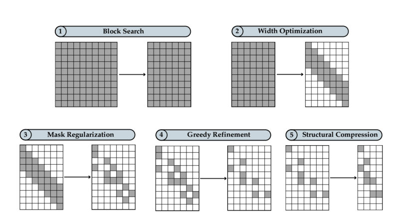
<figcaption class="paper-figure-caption"><b>Fig 1.</b> Figure 1: Overview of the optimization pipeline for the Learnable ansatz. In the experiments reported in this work, the number of blocks is fixed to 𝐵= 𝑑, so the block search shown in the first stage is omitted. The remaining stages include width selection, learned-mask optimization, greedy refinement, and structural compression.</figcaption>
</figure>
<figure class="paper-figure-card">
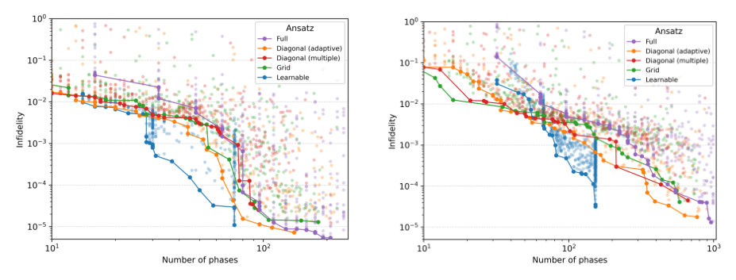
<figcaption class="paper-figure-caption"><b>Fig 2.</b> Figure 2: Pareto frontiers comparing the trade-off between infidelity and the number of SNAP phases for the Fourier-5 target state.</figcaption>
</figure>
<figure class="paper-figure-card">
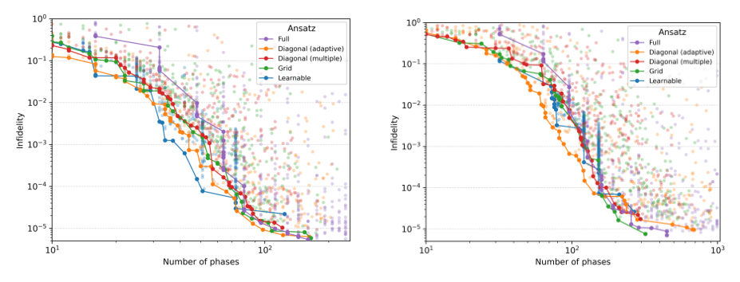
<figcaption class="paper-figure-caption"><b>Fig 3.</b> Figure 3: Pareto frontiers comparing the trade-off between infidelity and the number of SNAP phases for the Haar random target state.</figcaption>
</figure>
</div>

<p><strong>Summary.</strong> This paper tackles the resource cost of preparing quantum states in bosonic qudits by developing a novel machine learning technique. It introduces a differentiable mask that learns which phase parameters are essential for achieving a target state. The results demonstrate that this adaptive approach can significantly improve the trade-off between state fidelity and the number of required control resources compared to fixed, heuristic methods.</p>
<p><strong>Why it may be interesting.</strong> This work directly addresses resource optimization in quantum state preparation protocols relevant to superconducting circuit quantum computing, providing a machine learning framework to adaptively select necessary control parameters.</p>
<details>
<summary>Detailed structure</summary>
<p><strong>Main problem.</strong> The core problem is minimizing the computational cost, specifically the number of required phase parameters, when preparing complex quantum states in bosonic qudits using SNAP-Displacement sequences.</p>
<p><strong>Main result.</strong> The proposed method of learning the required phases via a differentiable mask achieves competitive or improved fidelity-resource trade-offs compared to fixed sparse ansatzes, especially for certain target states and infidelity thresholds.</p>
<p><strong>Method.</strong> The authors introduce a learnable, differentiable mask that jointly optimizes the gate parameters (displacement angles and phases) with the mask coefficients, using sparsity penalties and temperature annealing to guide the mask towards binary decisions.</p>
<p><strong>Model / system.</strong> The system involves bosonic qudits, simulated using superconducting radio-frequency cavities, which are controlled via a SNAP-Displacement protocol. The state preparation is optimized in an extended Hilbert space.</p>
<p><strong>Key observables.</strong> Fidelity ($F$), Infidelity ($I$), and the minimum number of active SNAP phases. Trade-offs are quantified using Pareto frontiers and hypervolume.</p>
<p><strong>Important parameters / regimes.</strong> The qudit dimension ($d$), the target state (e.g., Fourier-5, Haar-random), and the regularization weights ($\lambda$).</p>
<p><strong>Assumptions / limitations.</strong> The initial structural mask ($M_{	ext{struct}}$) is fixed based on heuristics, and the process involves converting a continuous soft mask to a discrete hard mask, which is mitigated by a final fine-tuning step.</p>
<p><strong>Figures summary.</strong> Figures show Pareto frontiers comparing the trade-off between infidelity and phase count for different ansatzes (Learnable vs. Diagonal adaptive) for Fourier-5 and Haar random states. Tables report the mean hypervolume for these comparisons.</p>
<p><strong>Paper structure.</strong> The paper first establishes the problem of phase explosion in qudit state preparation. It then details the proposed learnable mask approach, jointly optimizing parameters and mask structure. Finally, it rigorously compares this method against existing sparse ansatzes using metrics like hypervolume for various target states.</p>
</details>
<details>
<summary>Abstract</summary>
<p>Preparing quantum states in bosonic qudits with SNAP--Displacement sequences requires both optimizing the gate parameters and deciding which Fock levels should be controlled by each SNAP gate. A fully parameterized ansatz assigns an independent phase to every Fock level in every gate, leading to a number of phases that grows steeply. This constitutes a problem for short to medium term systems as controlling many phases requires complex control pulses which are subject to increased control errors. Previous work reduced this cost by restricting the trainable phases to predefined sparse patterns, such as a diagonal or a grid, which however may not be optimal for a specific target state. In this work, we address this limitation by introducing a method that learns which phases are needed together with their values, using a differentiable mask. A sparsity penalty encourages the removal of unnecessary phases, while temperature annealing gradually turns the masks into binary decisions. We compare the proposed method with fully parameterized and predefined sparse ansatzes on Fourier and Haar-random target states. The evaluation considers both the minimum number of phases required to reach different infidelity thresholds and the overall trade-off between fidelity and phases required, measured through Pareto frontiers and hypervolume. The results show that learning the location of the phases together with their values provides competitive or improved fidelity--resource trade-offs, although the advantage depends on the target state and qudit dimension.</p>
</details>
<p><sub><a href="#top">↑ back to top</a></sub></p>

<p><a id="paper-2610.21606"></a></p>
<h3 id="practical-fidelity-estimation-for-noisy-quantum-devices-using-direct-and-survival-probability-based-protocols"><a href="http://arxiv.org/abs/2610.21606v1">Practical Fidelity Estimation for Noisy Quantum Devices Using Direct and Survival-Probability-Based Protocols</a></h3>
<p><strong>Authors:</strong> Ahmed Aman, Kaustav Chatterjee, Younes Javanmard, Tanmoy Pandit<br>
<strong>Type:</strong> theory · <strong>Category:</strong> quantum information and computing · <strong>PDF:</strong> <a href="https://arxiv.org/pdf/2610.21606v1">https://arxiv.org/pdf/2610.21606v1</a><br>
<strong>Analysis basis:</strong> full PDF text, analyzed in chunks
<strong>Topic relevance:</strong> <code>quantum measurements</code> <strong>3/5</strong> · <code>QC/QI experiment</code> <strong>2/5</strong> · <code>methods for driven-dissipative</code> <strong>2/5</strong></p>
<div class="figure-strip-hint">↔ Scroll figures horizontally</div>
<div class="paper-figures-scroll">
<figure class="paper-figure-card">
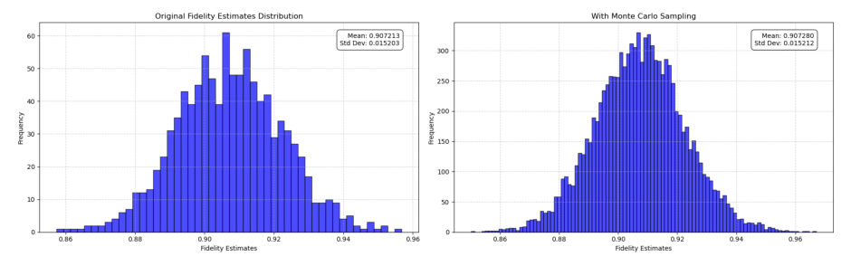
<figcaption class="paper-figure-caption"><b>Fig 1.</b> FIG. 1. Representative DFE results: Distribution of the fidelity estimates obtained from direct simulations and from the Monte Carlo extension. This distribution is based on a four-qubit Haar-random state that underwent a 10% depolarizing noise. The true calculated fidelity came out to be 0.90626, and the average from the plot was 0.907213. The plot on the left is a simulation of 1000 raw samples, whereas the plot on the right is with the Monte Carlo sampling from 1000 raw initial samples that was extended to 9000 samples. The absolute mean difference between the original estimation distribution and the distribution with the Monte Carlo sampling is 0.00102 for this particular case.</figcaption>
</figure>
<figure class="paper-figure-card">
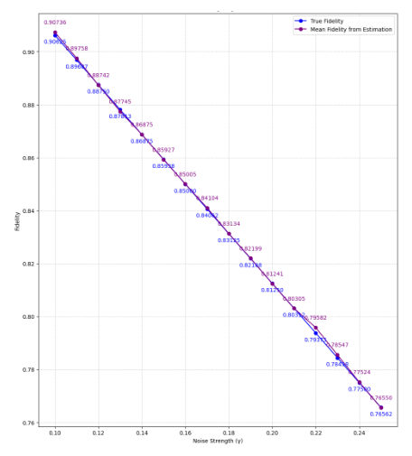
<figcaption class="paper-figure-caption"><b>Fig 2.</b> FIG. 2. True fidelity and mean estimated fidelity as functions of noise strength for a four-qubit Haar-random state under global depolarizing noise. The true-fidelity reference follows equation (3) with d = 16, and the simulated DFE means provide a numerical check of this result.</figcaption>
</figure>
<figure class="paper-figure-card">
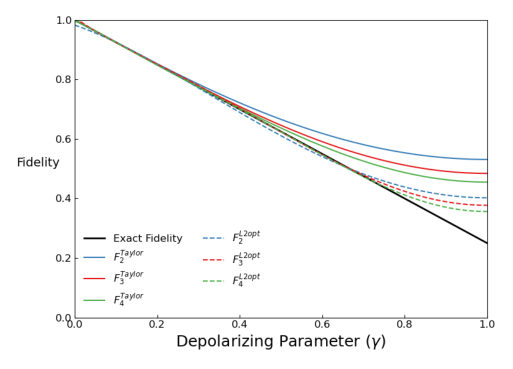
<figcaption class="paper-figure-caption"><b>Fig 3.</b> FIG. 3. Survival-probability reconstruction of the adjoint- cycle fidelity proxy. The dotted curve corresponds to the reconstruction with L2-optimized coefficients, which improves the high-noise behaviour relative to a standard Taylor-based approximation. This particular plot is based on a simulation using a 2-qubit Haar random state undergoing depolarizing channel.</figcaption>
</figure>
</div>

<p><strong>Summary.</strong> This paper introduces two advanced, scalable protocols for estimating quantum fidelity in noisy quantum devices, bypassing the need for full quantum state tomography. The methods, Direct Fidelity Estimation (DFE) and a survival-probability approach, leverage different structural properties of the noise channel. They offer practical tools for validating and improving noisy quantum hardware performance.</p>
<p><strong>Why it may be interesting.</strong> It provides concrete, mathematically rigorous protocols for characterizing quantum hardware performance, which is crucial for advancing quantum computation beyond idealized models.</p>
<details>
<summary>Detailed structure</summary>
<p><strong>Main problem.</strong> Developing experimentally feasible and scalable methods to estimate quantum state and process fidelity in the presence of noise, circumventing the limitations of full quantum state tomography.</p>
<p><strong>Main result.</strong> The paper presents two protocols—Direct Fidelity Estimation (DFE) and a survival-probability-based method—showing that the latter is intrinsically robust against State-Preparation-and-Measurement (SPAM) errors.</p>
<p><strong>Method.</strong> The protocols utilize Pauli measurements (DFE) or reconstruct fidelity from experimentally accessible moments of a noisy evolution cycle (survival probability method).</p>
<p><strong>Model / system.</strong> The work models noisy quantum devices undergoing evolution described by a superoperator K. Characterization focuses on estimating the fidelity between a target state and an experimentally prepared state, or characterizing the noise channel itself.</p>
<p><strong>Key observables.</strong> Fidelity ($F(
ho, \sigma)$), characteristic functions $X_
ho(k)$, and return probabilities $R_m = \langle\langle 
ho_0|C^m|
ho_0
angle
angle$.</p>
<p><strong>Important parameters / regimes.</strong> Noise types include depolarizing, dephasing, and amplitude-damping channels. Performance is analyzed in the high-noise regime.</p>
<p><strong>Assumptions / limitations.</strong> DFE assumes Pauli observables are measurable; the survival-probability method requires the adjoint-cycle proxy $Q=K^\dagger K$ and assumes the cycle spectrum lies within the approximation interval $[g, 1]$.</p>
<p><strong>Figures summary.</strong> Figures demonstrate DFE results comparing direct simulations to Monte Carlo extensions under depolarizing noise, and show the reconstruction of the adjoint-cycle fidelity proxy using L2-optimized coefficients versus naive Taylor truncation.</p>
<p><strong>Paper structure.</strong> The paper introduces the core problem, details the theoretical basis and implementation of DFE, presents the survival-probability method, compares the two approaches, analyzes noise sensitivity, and concludes with numerical evidence and future outlook.</p>
</details>
<details>
<summary>Abstract</summary>
<p>Reliable characterization of quantum states and quantum processes is central to the development of scalable quantum computing. Standard characterization techniques such as full quantum state tomography become rapidly impractical as system size increases. In this work we present two software-oriented fidelity estimation protocols that avoid full tomographic reconstruction while remaining experimentally relevant for noisy intermediate-scale quantum devices. The first protocol is direct fidelity estimation (DFE), where the fidelity between a target state and an experimentally prepared state is estimated from importance-sampled Pauli measurements. The second protocol is a survival-probability-based method that reconstructs fidelity from experimentally accessible moments of a noisy evolution and its approximate inverse, and is intrinsically robust against state-preparation-and-measurement (SPAM) errors. We discuss the theoretical basis of both approaches, analyze their noise sensitivity, and present numerical evidence on representative multiqubit states under depolarizing, dephasing, and amplitude-damping channels. For DFE we show that attenuation-aware correction improves robustness against measurement noise. For the survival-probability approach we show that an $L_2$-optimized expansion substantially outperforms naive Taylor truncation in high-noise regimes.</p>
</details>
<p><sub><a href="#top">↑ back to top</a></sub></p>

<p><a id="paper-2610.22004"></a></p>
<h3 id="thermal-activation-of-photon-catalysis-in-difference-intensity-mach-zehnder-interferometry-with-squeezed-thermal-light"><a href="http://arxiv.org/abs/2610.22004v1">Thermal activation of photon catalysis in difference-intensity Mach-Zehnder interferometry with squeezed thermal light</a></h3>
<p><strong>Authors:</strong> Kirtpreet Singh, Arvind<br>
<strong>Type:</strong> theory · <strong>Category:</strong> other · <strong>PDF:</strong> <a href="https://arxiv.org/pdf/2610.22004v1">https://arxiv.org/pdf/2610.22004v1</a><br>
<strong>Analysis basis:</strong> full PDF text, analyzed in chunks
<strong>Topic relevance:</strong> <code>interference shaping light</code> <strong>3/5</strong> · <code>quantum measurements</code> <strong>3/5</strong> · <code>Keldysh / 2PI / non-Gaussian methods</code> <strong>1/5</strong></p>
<div class="figure-strip-hint">↔ Scroll figures horizontally</div>
<div class="paper-figures-scroll">
<figure class="paper-figure-card">
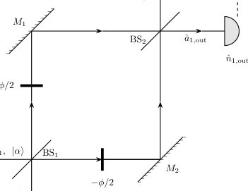
<figcaption class="paper-figure-caption"><b>Fig 1.</b> FIG. 1. Schematic diagram of the balanced Mach-Zehnder interferometer (MZI) for phase estimation via difference- intensity detection. Input mode 1 enters in a coherent state |α⟩and mode 2 is injected with the heralded non-Gaussian squeezed thermal state described by the normalized Wigner distribution f W(ξ2)/P. BS1 and BS2 denote 50:50 beam split- ters, M1 and M2 are highly reflective mirrors, and ±ϕ/2 are phase shifters imparting a relative phase shift ϕ corresponding to the Schwinger rotation e−iϕ ˆ J2. The output modes ˆa1,out and ˆa2,out are monitored by photodetectors measuring photon numbers ˆn1,out and ˆn2,out, whose difference yields the observ- able ˆO = ˆa† 1,outˆa1,out −ˆa†...</figcaption>
</figure>
<figure class="paper-figure-card">
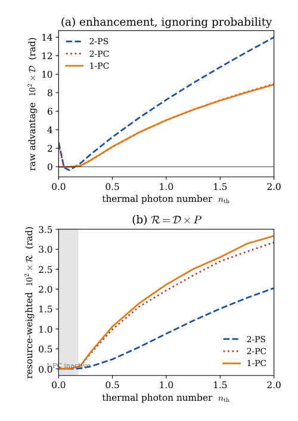
<figcaption class="paper-figure-caption"><b>Fig 2.</b> FIG. 3. Difference-intensity detection at r = 0.15, q0 = 10, ϕ = π/2, optimized over the transmissivity. (a) Raw advan- tage D of Eq. (16). Two-photon subtraction gives the largest raw advantage over the whole thermal range, and single- photon catalysis goes from a useless operation at nth = 0 to a strongly useful one. (b) Resource-weighted advantage R . Single-photon catalysis is the best operation for every nth ≳0.2, since it works well for heralding probability near one-half while subtraction loses out as it has low probability of success.</figcaption>
</figure>
<figure class="paper-figure-card">
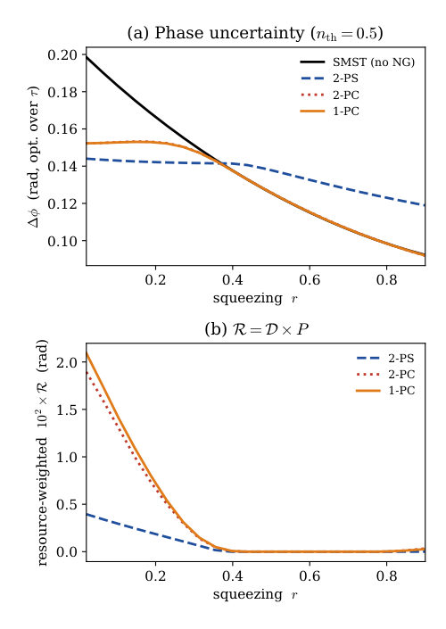
<figcaption class="paper-figure-caption"><b>Fig 3.</b> FIG. 4. Optimized difference-intensity phase uncertainty ∆ϕ against the squeezing r at nth = 0.5, q0 = 10, ϕ = π/2. The bare squeezed thermal resource is the solid black curve. Single-photon catalysis improves the sensitivity over the whole displayed squeezing window.</figcaption>
</figure>
<figure class="paper-figure-card">
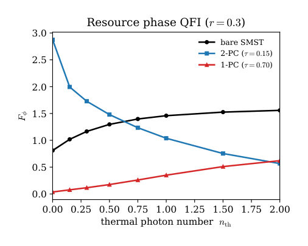
<figcaption class="paper-figure-caption"><b>Fig 4.</b> FIG. 5. Phase quantum Fisher information Fϕ of the heralded single-mode resource as a function of thermal occupation nth at r = 0.3, evaluated using Eq. (20). While two-photon catal- ysis and the bare squeezed thermal resource carry more phase information but decrease with thermal noise, single-photon catalysis is ineffective on vacuum and actively switches on with thermal occupation.</figcaption>
</figure>
<figure class="paper-figure-card">
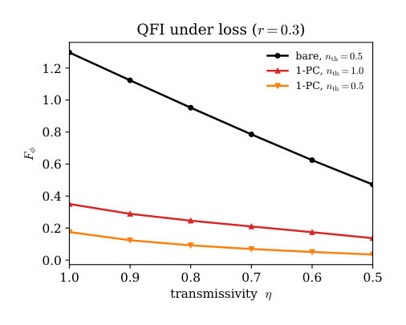
<figcaption class="paper-figure-caption"><b>Fig 5.</b> FIG. 6. Phase quantum Fisher information Fϕ of the heralded resource under a pure-loss channel of transmissivity η. The thermal activation of single-photon catalysis survives moder- ate optical loss, demonstrating the robustness of the effect.</figcaption>
</figure>
</div>

<p><strong>Summary.</strong> This work analyzes phase estimation in an MZI using squeezed thermal light, focusing on the role of photon catalysis. It finds that unlike vacuum resources, thermal noise activates single-photon catalysis as the best measurement strategy for moderate thermal occupations. The results confirm that difference-intensity detection remains highly robust and close to the ultimate precision limit.</p>
<p><strong>Why it may be interesting.</strong> It provides a detailed theoretical analysis of how realistic noise sources (thermal photons) interact with advanced quantum resources (squeezing) to optimize quantum metrology protocols, showing a non-trivial crossover in optimal measurement strategies.</p>
<details>
<summary>Detailed structure</summary>
<p><strong>Main problem.</strong> The paper investigates how non-Gaussian operations, specifically photon catalysis, can enhance phase estimation in a Mach-Zehnder Interferometer (MZI) when using realistic single-mode squeezed thermal light as the quantum resource.</p>
<p><strong>Main result.</strong> Single-photon catalysis emerges as the optimal success-weighted operation for thermal occupations above a threshold ($n_{th} \gtrsim 0.2$), demonstrating that thermal noise enhances the encoded phase information and maintains robustness against losses.</p>
<p><strong>Method.</strong> The analysis employs the phase space Wigner picture to calculate the Quantum Fisher Information (QFI) and phase sensitivity ($\Delta\phi$) for the difference-intensity observable.</p>
<p><strong>Model / system.</strong> The system models an MZI where the resource state is a single-mode squeezed thermal state. Non-Gaussian states are generated by mixing this resource with an ancillary Fock state and heralding on the output.</p>
<p><strong>Key observables.</strong> Phase sensitivity ($\Delta\phi$), Quantum Fisher Information (QFI), and the difference-intensity observable ($\hat{O}$).</p>
<p><strong>Important parameters / regimes.</strong> Squeezing parameter ($r$), thermal occupation ($n_{th}$), and beam splitter transmissivity ($    au$).</p>
<p><strong>Assumptions / limitations.</strong> The analysis assumes the realistic preparation of the non-Gaussian state via mixing with a Fock state and subsequent heralding.</p>
<p><strong>Figures summary.</strong> Figures illustrate the MZI setup for difference-intensity detection and the schematic for preparing the realistic non-Gaussian state using the resource and an ancilla.</p>
<p><strong>Paper structure.</strong> The paper builds from the general problem of phase estimation using non-Gaussian operations, details the specific model involving squeezed thermal light, derives the heralded Wigner function, and finally computes the phase sensitivity using QFI.</p>
</details>
<details>
<summary>Abstract</summary>
<p>Realistic non-Gaussian operations, which can be implemented by mixing a nonclassical Gaussian state with a Fock state at a beam splitter and then heralding on a photon-number-resolving detector, are known to improve phase estimation in a Mach-Zehnder interferometer. The existing studies have considered the single-mode squeezed vacuum for difference-intensity and parity detection, and the two-mode squeezed thermal state for parity detection alone as the initial Gaussian resources. However, a real squeezer in the lab actually produces single-mode squeezed thermal light, which has not been studied in a coherent-plus-resource interferometer. We take up this case and using the phase space Wigner picture, we obtain the heralded state produced by photon subtraction, addition and catalysis on a single-mode squeezed thermal resource, and evaluate the corresponding phase sensitivities. Single-photon catalysis, which is useless on squeezed vacuum, becomes a useful operation for any thermal occupation above $\nth\simeq0.2$, and since it heralds with a probability near one-half, it turns out to be the best success-weighted operation over the whole thermal range. In the vacuum limit our results reproduce the known hierarchy, where two-photon catalysis is the best operation. The quantum Fisher information computations confirms that thermal noise enhances the phase information encoded in the catalyzed state, demonstrating that difference-intensity detection closely approaches the ultimate precision bound across most operational regimes, and, together with a loss analysis, verifies the robustness of the effect.</p>
</details>
<p><sub><a href="#top">↑ back to top</a></sub></p>

<p><a id="paper-2610.22140"></a></p>
<h3 id="a-rigid-commensurate-host-and-a-defect-that-switches-vacancies-in-the-frustrated-alternating-spin-1-12-heisenberg-chain"><a href="http://arxiv.org/abs/2610.22140v1">A rigid commensurate host and a defect that switches: vacancies in the frustrated alternating spin-(1, 1/2) Heisenberg chain</a></h3>
<p><strong>Authors:</strong> R. L. Silva, R. C. Silva, A. R. Pereira<br>
<strong>Type:</strong> theory · <strong>Category:</strong> other · <strong>PDF:</strong> <a href="https://arxiv.org/pdf/2610.22140v1">https://arxiv.org/pdf/2610.22140v1</a><br>
<strong>Analysis basis:</strong> full PDF text, analyzed in chunks
<strong>Topic relevance:</strong> <code>analog quantum simulation</code> <strong>3/5</strong> · <code>methods for driven-dissipative</code> <strong>2/5</strong> · <code>Frenkel-Kontorova</code> <strong>1/5</strong></p>
<div class="figure-strip-hint">↔ Scroll figures horizontally</div>
<div class="paper-figures-scroll">
<figure class="paper-figure-card">
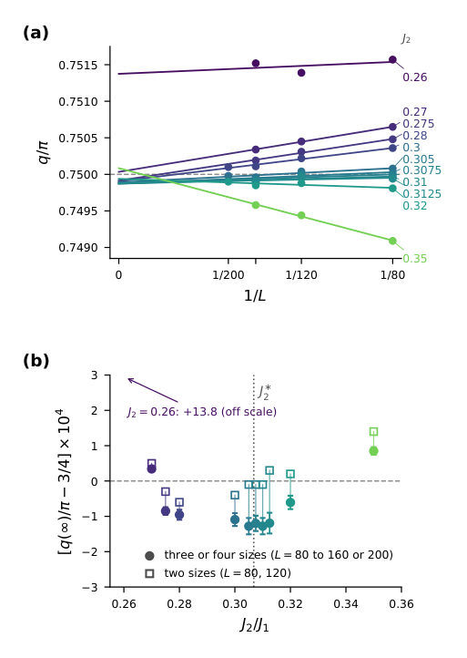
<figcaption class="paper-figure-caption"><b>Fig 1.</b> FIG. 1. Pitch of the clean chain in the singlet phase. (a) q(L)/π against 1/L for each J2 (labels at the right), with the linear extrapolation; the dashed line is 3/4. The slope shrinks with J2; measured on the L = 80, 120 pair it changes sign at J2 = 0.3076(43), Eq. (3), but on the L = 120, 160 pair it stays positive across the whole window — the crossing is a property of the pair of sizes, not of the limit; on L = 160, 200 the pitch has stopped moving. (b) Extrapolated pitch, q(∞)/π −3/4, against J2; filled circles use three or four sizes (L = 80 to 160 or 200) with the rms fit residual as error bar; open squares use two sizes (L = 80, 120) and are biased upward by ≃10−4, as the vertical...</figcaption>
</figure>
<figure class="paper-figure-card">
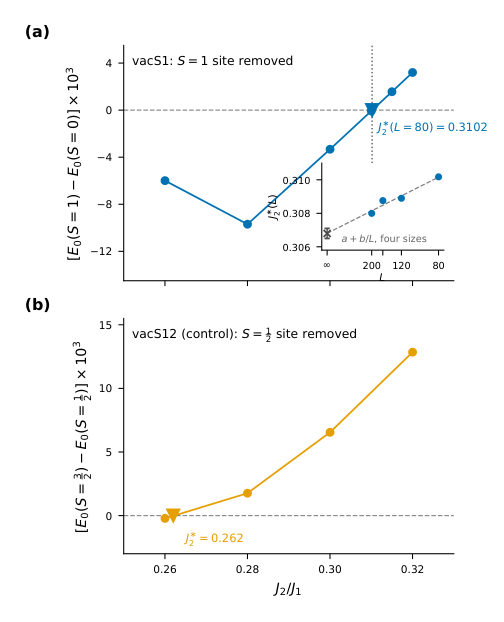
<figcaption class="paper-figure-caption"><b>Fig 2.</b> FIG. 2. Sector splitting of the doped chain at L = 80. (a) vacS1: E0(S=1) −E0(S=0) against J2; the triangle marks the sign change, J∗ 2 = 0.3102, and the dotted line carries it to the top of the panel. Negative means the doped chain has a triplet ground state. Inset: the crossing against inverse size, located at each L by the same pair (0.30, 0.32) for L = 80, 120, 160 and 200; the dashed line is the linear fit in 1/L through the four, J∗ 2 (∞) = 0.3068(3), Eq. (5); the point at L = 160 carries the largest residual. (b) vacS12, the control: the analogous splitting crosses zero near J2 = 0.262 instead.</figcaption>
</figure>
<figure class="paper-figure-card">
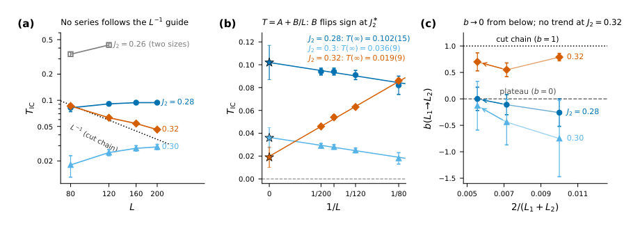
<figcaption class="paper-figure-caption"><b>Fig 3.</b> FIG. 3. Transmission through the S = 1 vacancy against system size. (a) Log-log, with the L−1 guide of the cut-chain fixed point; open symbols mark the coupling measured at two sizes only; couplings on the moment side (J2 = 0.28, 0.30) are drawn in blue, the singlet side (0.32) in orange. No filled curve tracks the guide. (b) The same data against 1/L, with the weighted fit TIC = A + B/L; the stars are the intercepts, 0.102(15), 0.036(9) and 0.019(9) at J2 = 0.28, 0.30 and 0.32 (window systematic included); the first two are away from the origin that a cut chain requires, the third is not resolved from a power-law decay. The correction B changes sign with the sector. (c) The pairwise slope...</figcaption>
</figure>
<figure class="paper-figure-card">
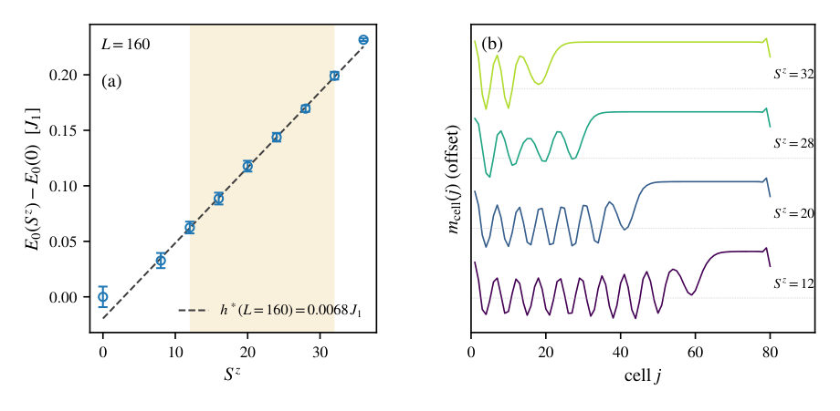
<figcaption class="paper-figure-caption"><b>Fig 4.</b> FIG. 4. Lever-rule test at J2/J1 = 0.24, L = 160 (U(1) code). (a) Sector energy E0(Sz) −E0(0) against Sz; the linear regime (shaded) defines the coexistence field h∗. (b) Cell magnetization mcell(j) = ⟨Sz A,j⟩+ ⟨Sz B,j⟩for selected Sz (curves offset vertically). The ferrimagnetic domain grows at the expense of the incommensurate one as Sz increases; the single domain wall moves linearly with Sz.</figcaption>
</figure>
</div>

<p><strong>Summary.</strong> This paper uses advanced DMRG techniques to study a frustrated alternating spin-Heisenberg chain, focusing on how a single vacancy defect modifies the ground state. The authors find that the defect induces a distinct quantum phase transition at a critical coupling $J_2^*$, which is independent of the bulk material's intrinsic phase transitions. This work is significant for understanding boundary effects and defect physics in quantum spin systems.</p>
<p><strong>Why it may be interesting.</strong> This work provides detailed insights into how local defects fundamentally alter the macroscopic quantum phase transitions in low-dimensional quantum magnets, which is crucial for understanding boundary effects in quantum materials.</p>
<details>
<summary>Detailed structure</summary>
<p><strong>Main problem.</strong> The study investigates the ground state properties and the effect of a single vacancy defect in a frustrated alternating spin-(1, 1/2) Heisenberg chain.</p>
<p><strong>Main result.</strong> The system undergoes a discontinuous transition from a high-spin state to a critical singlet phase, and the defect transition point ($J_2^*$) is shown to be independent of the host's thermodynamic transition.</p>
<p><strong>Method.</strong> The research employs the SU(2)-symmetric Density-Matrix Renormalization Group (DMRG) method, analyzing the system on open chains of varying lengths.</p>
<p><strong>Model / system.</strong> The model is an alternating spin-(1, 1/2) Heisenberg chain governed by a Hamiltonian including nearest-neighbor ($J_1$) and frustrating next-nearest-neighbor ($J_2$) couplings. The analysis focuses on the ground state when a central site (specifically an $S=1$ site) is removed.</p>
<p><strong>Key observables.</strong> Total spin (Lieb–Mattis moment), singlet–triplet gap, entanglement entropy (with central charge $c \simeq 1.8$), modulation wavevector ($q$), and correlation transmission ($T(\infty)$) through the vacancy.</p>
<p><strong>Important parameters / regimes.</strong> The critical coupling constant $J_2^* \approx 0.3068(3)$ marks the transition induced by the vacancy. The analysis is sensitive to the ratio $J_2/J_1$.</p>
<p><strong>Assumptions / limitations.</strong> The analysis relies on the DMRG framework, treating total spin $S$ as a quantum number label. The study distinguishes between the defect-induced transition and the host's intrinsic phase transition.</p>
<p><strong>Figures summary.</strong> Figures illustrate the transmission of correlations through the vacancy as a function of system size, fitting data to $T = A + B/L$ to locate the critical point $J_2^*$. Other figures examine sector energies and domain wall movement.</p>
<p><strong>Paper structure.</strong> The paper systematically analyzes the clean chain's transition (loss of Lieb-Mattis moment), characterizes the critical singlet phase (gap closing, $q$ value), and then focuses on the defect physics, determining the critical coupling $J_2^*$ where the ground state switches from triplet to singlet, while confirming the cut-chain law is violated.</p>
</details>
<details>
<summary>Abstract</summary>
<p>The alternating spin-$(1,\tfrac12)$ Heisenberg chain with a frustrating next-nearest-neighbor coupling $J_2$ loses its Lieb--Mattis moment through a discontinuous transition to a singlet whose nature was left open. Using an SU(2)-symmetric density-matrix renormalization group, in which the total spin is a quantum-number label, we identify that phase and follow a single vacancy through it. The total spin collapses directly from $S=L/4$ to $S=0$, with no partially polarized window. The singlet phase is critical: its singlet--triplet gap closes as $1/L$, its entanglement entropy grows logarithmically with a central charge $c\simeq1.8$, and its modulation wavevector, extrapolated from $L=80$ to $200$, is commensurate at $3π/4$ and independent of $J_2$ to $5\times10^{-5}$. Removing the central $S=1$ site switches the ground state of the doped chain from a triplet to a singlet at $J_2^{\ast}=0.3068(3)$, where the host shows no feature; the triplet is not bound to the vacancy but spread over one of the two segments it leaves. The transmission of correlations through the vacancy saturates at a finite value below $J_2^{\ast}$, $T(\infty)=0.102(15)$ and $0.036(9)$ at $J_2=0.28$ and $0.30$, and the cut-chain law $T\propto L^{-1}$ is excluded on both sides. We also show that the longitudinal correlator is not an observable in a triplet sector.</p>
</details>
<p><sub><a href="#top">↑ back to top</a></sub></p>

<p><a id="paper-2610.20728"></a></p>
<h3 id="alternating-squeezing-and-photon-subtraction-for-optical-cat-state-generation"><a href="http://arxiv.org/abs/2610.20728v1">Alternating Squeezing and Photon Subtraction for Optical Cat-State Generation</a></h3>
<p><strong>Authors:</strong> Johanna Conrad, Fabian Steinlechner, René Sondenheimer<br>
<strong>Type:</strong> theory · <strong>Category:</strong> quantum information and computing · <strong>PDF:</strong> <a href="https://arxiv.org/pdf/2610.20728v1">https://arxiv.org/pdf/2610.20728v1</a><br>
<strong>Analysis basis:</strong> full PDF text, analyzed in chunks
<strong>Topic relevance:</strong> <code>quantum measurements</code> <strong>3/5</strong> · <code>analog quantum simulation</code> <strong>1/5</strong> · <code>interference shaping light</code> <strong>1/5</strong> · <code>methods for driven-dissipative</code> <strong>1/5</strong></p>
<div class="figure-strip-hint">↔ Scroll figures horizontally</div>
<div class="paper-figures-scroll">
<figure class="paper-figure-card">
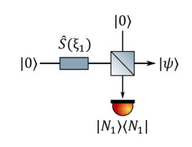
<figcaption class="paper-figure-caption"><b>Fig 1.</b> Figure 1. Setup of plain photon subtraction. A squeezed- vacuum input with squeezing parameter ξ1 is mixed with vac- uum on a beam splitter of transmittance T1 and N1 photons are detected in the reflected arm.</figcaption>
</figure>
<figure class="paper-figure-card">
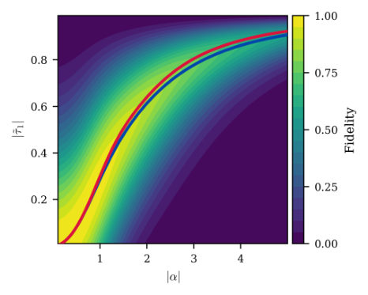
<figcaption class="paper-figure-caption"><b>Fig 2.</b> Figure 2. Fidelity of an even cat state over cat state size |α| and input squeezing |˜τ1| for subtracting N1 = 2 photons. The red line shows the resource-driven and the blue line the target-driven optimum.</figcaption>
</figure>
<figure class="paper-figure-card">
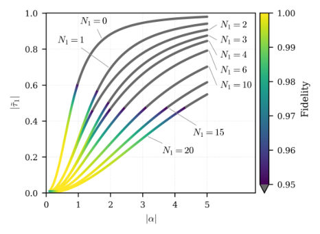
<figcaption class="paper-figure-caption"><b>Fig 3.</b> Figure 3. Fidelity optima between cat states and photon- subtracted squeezed vacuum states for the target-driven view for a variation of subtracted photon numbers N1. Grey lines describe fidelities below 0.95.</figcaption>
</figure>
<figure class="paper-figure-card">
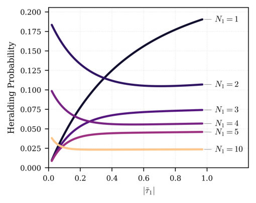
<figcaption class="paper-figure-caption"><b>Fig 4.</b> Figure 4. Heralding probability as a function of the effective squeezing parameter |˜τ1|. Colors encode different photon sub- traction numbers N1 between 1 and 10.</figcaption>
</figure>
<figure class="paper-figure-card">
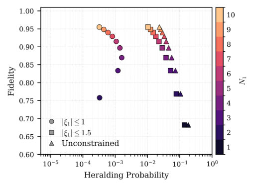
<figcaption class="paper-figure-caption"><b>Fig 5.</b> Figure 5. Fidelity over heralding probability for plain photon subtraction of squeezed vacuum with a maximum beam split- ter transmission of 0.99 for |α| = 3 cat states. We compare different maximum squeezing levels |ξmax| (markers) and dif- ferent photon subtraction numbers N1 (color encoded).</figcaption>
</figure>
</div>

<p><strong>Summary.</strong> This paper proposes an advanced method using alternating squeezing and photon subtraction to generate high-fidelity Schrödinger cat states in optical systems. By treating the generation as a multibranch optimization rather than optimizing for a single outcome, the authors demonstrate improved resource efficiency. The results provide a systematic guide for choosing the best architecture based on realistic experimental constraints.</p>
<p><strong>Why it may be interesting.</strong> This work directly addresses resource optimization and state preparation fidelity in continuous-variable quantum optics, which is crucial for quantum sensing and quantum communication protocols.</p>
<details>
<summary>Detailed structure</summary>
<p><strong>Main problem.</strong> The primary goal is to generate high-fidelity, large-amplitude Schrödinger cat states in the optical domain, overcoming limitations associated with single-outcome photon subtraction.</p>
<p><strong>Main result.</strong> The proposed alternating squeezing and photon-number-subtraction scheme improves fidelity and success probability over plain subtraction, with genuinely alternating branches only being advantageous under limited photon-number resolution.</p>
<p><strong>Method.</strong> The authors formulate the generation process as a fidelity-constrained multibranch optimization, jointly optimizing the total probability across all viable photon-number outcomes.</p>
<p><strong>Model / system.</strong> The system involves optical quantum states, specifically utilizing squeezed vacuum states and implementing photon subtraction via beam-splitter-based conditional preparation.</p>
<p><strong>Key observables.</strong> Cat-state fidelity (F), heralding probability, and the conditional output state $|\psi_{N_1}
angle$.</p>
<p><strong>Important parameters / regimes.</strong> Squeezing parameters ($\xi_1, \xi_2$), cat amplitude ($|\alpha|$), and the constraints imposed by photon-number resolution.</p>
<p><strong>Assumptions / limitations.</strong> The analysis assumes experimentally relevant constraints on available squeezing resources and photon-number resolution, and that photon subtraction is realized via a beam-splitter process.</p>
<p><strong>Figures summary.</strong> The notes reference Figure 1, which illustrates the setup for plain photon subtraction from a squeezed vacuum state.</p>
<p><strong>Paper structure.</strong> The paper reviews plain photon subtraction (baseline), extends the protocol by adding a second squeezing stage, and finally generalizes the method by introducing a second photon-subtraction stage, culminating in multibranch optimization.</p>
</details>
<details>
<summary>Abstract</summary>
<p>Schrödinger cat states are important non-Gaussian resources for quantum information processing and quantum-enhanced metrology. Although photon subtraction from squeezed vacuum states has proven useful for generating such states in the optical domain, scaling to large amplitudes while maintaining high fidelity and heralding probability remains challenging. To address these obstacles, we analyze alternating squeezing and photon-number-subtraction operations. Rather than optimizing for a single heralding outcome, we formulate cat-state generation as a fidelity-constrained multibranch problem, jointly optimizing the total probability of all photon-number outcomes satisfying a prescribed fidelity threshold at one common experimental setting. Already for plain photon subtraction, this provides a more operational measure of the usable generation probability and can favor parameter configurations that differ from single-branch optima. Considering experimental constraints on available squeezing and photon-number-resolving capability, we demonstrate improvements in fidelity and success probability compared with plain photon subtraction, without necessarily increasing the required squeezing resources. Without restrictions on photon-number resolution, we find that the optimal architecture of the alternating scheme reduces to one of two single-subtraction endpoint configurations, depending on the available squeezing resources. When photon-number resolution is additionally limited, genuinely alternating branches can become advantageous. We derive analytical expressions for the conditional states, cat-state fidelities, and heralding probabilities, enabling efficient multibranch optimization and a systematic analysis of resource trade-offs, sensitivity to experimental parameter deviations, and heralding loss. Together, these results identify the architecture best suited to a given resource budget.</p>
</details>
<p><sub><a href="#top">↑ back to top</a></sub></p>

<p><a id="paper-2610.21112"></a></p>
<h3 id="displacement-noise-free-gravitational-wave-detector-using-quantum-tomography-of-photon-orbital-angular-momentum-states"><a href="http://arxiv.org/abs/2610.21112v1">Displacement-noise-free gravitational-wave detector using quantum tomography of photon orbital angular momentum states</a></h3>
<p><strong>Authors:</strong> Haorong Wu, Xilong Fan, Lixiang Chen<br>
<strong>Type:</strong> theory · <strong>Category:</strong> other · <strong>PDF:</strong> <a href="https://arxiv.org/pdf/2610.21112v1">https://arxiv.org/pdf/2610.21112v1</a><br>
<strong>Analysis basis:</strong> full PDF text, analyzed in chunks
<strong>Topic relevance:</strong> <code>interference shaping light</code> <strong>3/5</strong> · <code>quantum measurements</code> <strong>3/5</strong></p>
<div class="figure-strip-hint">↔ Scroll figures horizontally</div>
<div class="paper-figures-scroll">
<figure class="paper-figure-card">
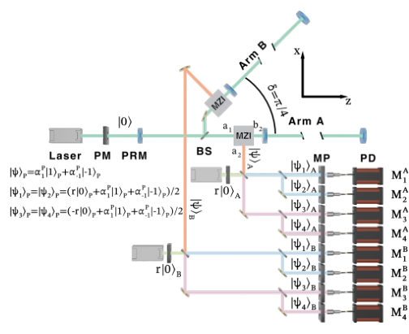
<figcaption class="paper-figure-caption"><b>Fig 1.</b> FIG. 1. Schematic of the proposed GW detector. Ab- breviations: phase modulator (PM), power recycling mir- ror (PRM), beamsplitter (BS), Mach-Zehnder interferometer (MZI), mode projector (MP), photodetector (PD). Solid black squares indicate breaks in the macroscopic arms. The states selected by the MPs and measured by the corresponding PDs are listed at the lower left.</figcaption>
</figure>
<figure class="paper-figure-card">
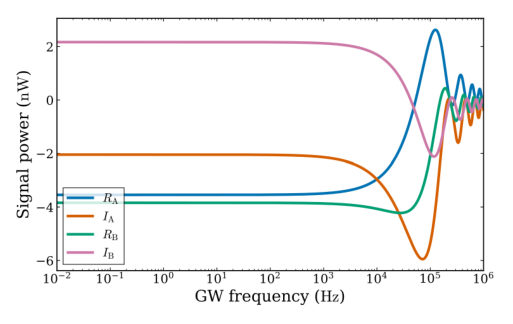
<figcaption class="paper-figure-caption"><b>Fig 2.</b> FIG. 2. Balanced signal powers RP and IP at t = 0 as func- tions of GW frequency. Their magnitudes reach the nanowatt level at low frequencies. The incident power is PBS = 10 kW; the remaining parameters are specified in the main text.</figcaption>
</figure>
<figure class="paper-figure-card">
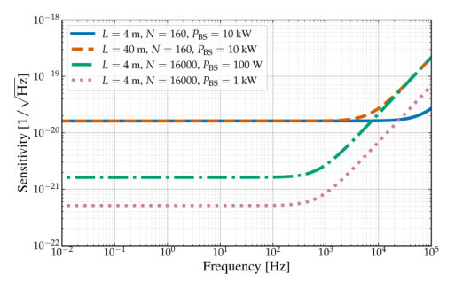
<figcaption class="paper-figure-caption"><b>Fig 3.</b> FIG. 3. Shot-noise-limited strain sensitivities of the pro- posed detector for four configurations. Blue solid: L = 4 m, N = 160, PBS = 10 kW, and γ = 0.1. Orange dashed: L = 40 m, N = 160, PBS = 10 kW, and γ = 0.01. Green dash- dotted: L = 4 m, N = 16000, PBS = 100 W, and γ = 0.1. Purple dotted: L = 4 m, N = 16000, PBS = 1 kW, and γ = 0.1. Increasing the effective interaction time improves the low-frequency sensitivity at the expense of bandwidth, while increasing the incident power further reduces the shot-noise floor. The purple curve represents an idealized high-power benchmark. Other parameters are specified in the main text.</figcaption>
</figure>
<figure class="paper-figure-card">
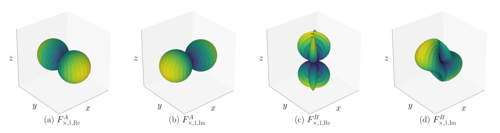
<figcaption class="paper-figure-caption"><b>Fig 4.</b> FIG. 4. Antenna patterns for the ×-polarized GW. (a) |F A ×,1,Re| exhibits spatial nulls at θ = 0 as well as ϕ = 0 and π. The azimuthal nulls (ϕ) are covered by the complementary geometry of (b) |F A ×,1,Im|, while the polar nulls (θ) are covered by (c) |F B ×,1,Re|. The pattern for (d) |F B ×,1,Im| provides additional complex angular dependence. Together, these patterns ensure comprehensive angular sensitivity.</figcaption>
</figure>
</div>

<p><strong>Summary.</strong> This paper proposes a novel, displacement-noise-free gravitational-wave detector that reads out GW signals by measuring quantum transitions in the Orbital Angular Momentum (OAM) states of photons. By employing quantum state tomography and a V-shaped interferometer, the scheme can resolve multiple GW parameters and is theoretically capable of bridging the critical $0.1-10 	ext{ Hz}$ frequency gap for detection.</p>
<p><strong>Why it may be interesting.</strong> This work is highly relevant to quantum optics and open quantum systems because it proposes using structured light (OAM states) and quantum measurement techniques (tomography) to sense extremely weak, non-linear physical perturbations (GWs), moving beyond standard linear interferometry.</p>
<details>
<summary>Detailed structure</summary>
<p><strong>Main problem.</strong> To develop a gravitational-wave (GW) detector that is immune to displacement noise by extracting GW information from the quantum transitions occurring in the Orbital Angular Momentum (OAM) states of photons.</p>
<p><strong>Main result.</strong> The proposed V-shaped detector framework can resolve all seven GW wave parameters and provides a broadband probe capable of bridging the $0.1-10 	ext{ Hz}$ mid-frequency gap.</p>
<p><strong>Method.</strong> The method employs parametrized quantum state tomography on the OAM sidebands induced by GWs, enhancing the signal using a strong reference state to overcome direct detection limits.</p>
<p><strong>Model / system.</strong> The system uses photons whose OAM states undergo quantum transitions ($\alpha_{\pm}$) when passing through a region perturbed by a passing gravitational wave. The detection relies on measuring these transitions using a V-shaped interferometer geometry.</p>
<p><strong>Key observables.</strong> The measured quantities are the projected state powers ($M_{P1}$ to $M_{P4}$), which are used to reconstruct the complex OAM transition amplitudes ($\alpha_P^\pm$) and ultimately the GW parameters ($ heta, \phi,     ilde{A}<em>    imes,   ilde{A}</em>+$).</p>
<p><strong>Important parameters / regimes.</strong> Key parameters include the incident power ($P_{\mathrm{BS}}=10 	ext{ kW}$), arm length ($L=4 	ext{ m}$), number of round trips ($N=160$), and the reference state strength ($r=0.01$).</p>
<p><strong>Assumptions / limitations.</strong> The analysis assumes the signal duration is much longer than the optical storage time ($t_d \gg 2NL$) and utilizes the paraxial approximation ($\gamma \ll 1$).</p>
<p><strong>Figures summary.</strong> Figure 1 schematically illustrates the detector components (PM, PRM, BS, MZI, MP, PDs) for the two arms. Figure 2 shows the balanced signal powers ($  ext{R}_P$ and $ ext{I}_P$) versus GW frequency. Figure 3 compares the shot-noise-limited strain sensitivities for various configurations.</p>
<p><strong>Paper structure.</strong> The paper first introduces the physical mechanism of GW interaction with OAM states. It then details the quantum tomography measurement scheme, including signal enhancement and noise cancellation techniques. Finally, it derives the sensitivity floor and demonstrates the broadband capability of the detector.</p>
</details>
<details>
<summary>Abstract</summary>
<p>Gravitational waves (GWs) induce quantum transitions between photon orbital-angular-momentum (OAM) states with amplitudes $α_{\pm}$. Exploiting this effect, we present a displacement-noise-free detection framework that extracts GW information from the OAM Hilbert space. Parametrized quantum state tomography of the GW-induced OAM sidebands enables a single V-shaped detector to resolve all seven wave parameters: the frequency, propagation direction, two polarization amplitudes, and initial phase of each polarization. Direct detection of the sidebands yields a weak signal of approximately $10^{-15}\,\mathrm{W}$. We therefore introduce a stronger reference state $r |0>_{\mathrm{P}}$, with $r=0.01$, to enhance the detected signal. For an arm length of $L=4\,\mathrm{m}$, $N=160$ round trips, a paraxial parameter of $γ=0.1$, an incident light power of $P_{\mathrm{BS}}=10\,\mathrm{kW}$, a wavelength of $λ_{\mathrm{opt}}=1064\,\mathrm{nm}$, and GW amplitudes of $A=10^{-18}$, we estimate sideband transition amplitudes of $|α_{\pm}|\sim10^{-10}$ and signal powers of order $1\,\mathrm{nW}$, scaling as $P_{\mathrm{BS}}α_{\pm}\propto P_{\mathrm{BS}}ANLγ/λ_{\mathrm{opt}}$. The shot-noise-limited sensitivity floor is $S^{1/2}_n=1.6\times10^{-20}\,\mathrm{Hz}^{-1/2}$. Because the scheme measures OAM transition amplitudes rather than differential arm lengths, it is intrinsically free from displacement noise and provides a broadband probe of GWs, specifically bridging the $0.1$--$10\,\mathrm{Hz}$ mid-frequency gap.</p>
</details>
<p><sub><a href="#top">↑ back to top</a></sub></p>

<p><a id="paper-2610.22093"></a></p>
<h3 id="bubble-sort-exchange-networks-symmetry-selection-rules-and-language-model-distillation-on-exchange-only-spin-chains"><a href="http://arxiv.org/abs/2610.22093v1">Bubble-Sort Exchange Networks: Symmetry Selection Rules and Language-Model Distillation on Exchange-Only Spin Chains</a></h3>
<p><strong>Authors:</strong> Yuichiro Minato<br>
<strong>Type:</strong> theory · <strong>Category:</strong> quantum information and computing · <strong>PDF:</strong> <a href="https://arxiv.org/pdf/2610.22093v1">https://arxiv.org/pdf/2610.22093v1</a><br>
<strong>Analysis basis:</strong> full PDF text, analyzed in chunks
<strong>Topic relevance:</strong> <code>methods for driven-dissipative</code> <strong>3/5</strong> · <code>analog quantum simulation</code> <strong>2/5</strong></p>
<div class="figure-strip-hint">↔ Scroll figures horizontally</div>
<div class="paper-figures-scroll">
<figure class="paper-figure-card">
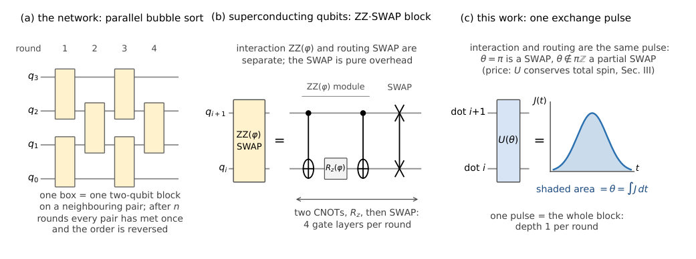
<figcaption class="paper-figure-caption"><b>Fig 1.</b> FIG. 1. Where this paper starts. (a) The parallel bubble sort (odd–even transposition): in each round a two-qubit block acts on every other neighbouring pair, the pairs alternate from round to round, and after n rounds every pair of qubits has been adjacent exactly once while the register order is reversed. (b) On superconducting hardware [6] the block is ZZ(φ)·SWAP: the interaction (two CNOTs around an Rz) and the routing SWAP are separate operations, four gate layers per round in the count of Ref. [6], before native compilation. (c) On an exchange-coupled spin chain the block is a single exchange pulse U(θ) = e−iθ Si·Si+1 whose only parameter is the pulse area θ = R J dt: θ = π is a SWAP,...</figcaption>
</figure>
<figure class="paper-figure-card">
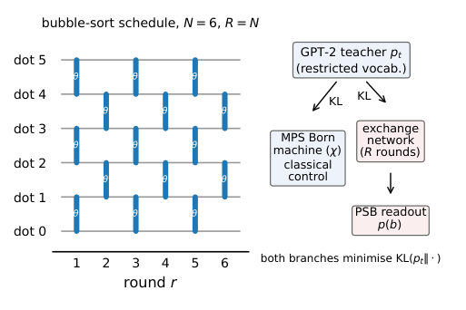
<figcaption class="paper-figure-caption"><b>Fig 2.</b> FIG. 2. Left: the bubble-sort (odd–even transposition) sched- ule for N = 6 dots, R = N rounds. Each bar is one exchange pulse U(θ) with its own pulse area; θ = π on every bar reverses the chain. Right: the distillation pipeline used in Sec. IV: a restricted-vocabulary GPT-2 continuation distribution is fit- ted independently by MPS Born machines (a classical control for the bond dimension the circuit must emulate) and by the exchange network, trained directly on the KL divergence to the teacher, read out by Pauli spin blockade on the first pair of every block.</figcaption>
</figure>
<figure class="paper-figure-card">
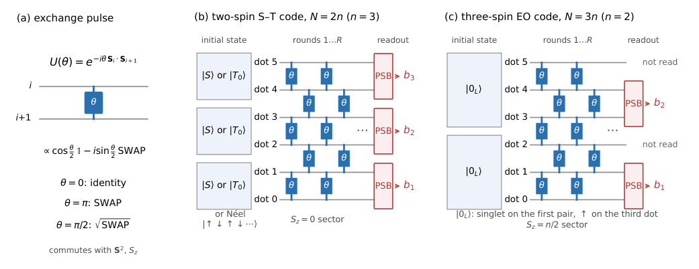
<figcaption class="paper-figure-caption"><b>Fig 3.</b> FIG. 3. The network as a circuit. (a) The only gate: one exchange pulse of area θ on a neighbouring pair, Eq. (1); θ = 0, π/2 and π give the identity, √</figcaption>
</figure>
<figure class="paper-figure-card">
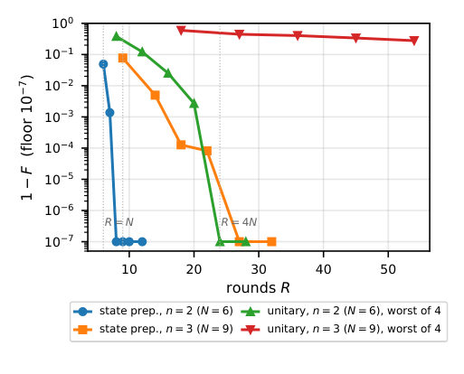
<figcaption class="paper-figure-caption"><b>Fig 4.</b> FIG. 4. Infidelity of the three-spin network versus number of rounds. State preparation: mean over Haar-random logical targets for n = 2 (N = 6) and n = 3 (N = 9); values below 10−7 are shown at the floor. Unitary compilation: worst of the four targets of Appendix A (three random polar factors and the GPT-2 block) for n = 2 and n = 3. At n = 2 a state needs R ≈N + 2 and a leakage-free logical unitary R = 4N; at n = 3 states need R ≈3N and unitaries are not reached up to R = 6N.</figcaption>
</figure>
<figure class="paper-figure-card">
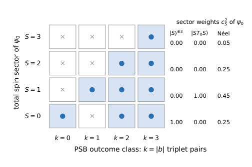
<figcaption class="paper-figure-caption"><b>Fig 5.</b> FIG. 5. The selection rule for the two-spin encoding with n = 3 blocks (N = 6). A dot marks the total-spin sectors S ∈Λ(k) of the initial state that can contribute to a PSB outcome with k triplet pairs; a cross marks a forbidden com- bination (one spin-1 cannot couple to S = 0, so k = 1 is fed by S = 1 only, and k spin-1’s cannot exceed S = k). Ex- change dynamics cannot move weight between rows, so the probability of a column is bounded by the weights c2 S of its dotted rows, Eq. (5). Right: c2 S for three initial states. |S⟩⊗3</figcaption>
</figure>
</div>

<p><strong>Summary.</strong> This work investigates using a bubble-sort exchange network on spin chains to perform quantum computation by distilling probability distributions from large language models. The authors derive strict symmetry rules governing the achievable quantum states and demonstrate high-fidelity performance in these distillation tasks. This shows a viable pathway for implementing complex quantum algorithms using only local, nearest-neighbor exchange interactions.</p>
<p><strong>Why it may be interesting.</strong> It provides a concrete, hardware-constrained model (exchange-only chains) for implementing complex quantum algorithms derived from machine learning, bridging quantum simulation with quantum computation.</p>
<details>
<summary>Detailed structure</summary>
<p><strong>Main problem.</strong> To characterize the capability of a bubble-sort exchange network on exchange-only spin chains to perform quantum information tasks, specifically distilling probability distributions from classical language models.</p>
<p><strong>Main result.</strong> The network successfully distills complex probability distributions (like those from GPT-2) with high fidelity, achieving performance comparable to or exceeding established benchmarks like 2D arrays or non-local couplings.</p>
<p><strong>Method.</strong> The study combines theoretical analysis of spin-spin exchange constraints (deriving necessary and sufficient selection rules) with advanced simulation techniques like Matrix-Product States (MPS) for quantum knowledge distillation.</p>
<p><strong>Model / system.</strong> The system is a linear array of exchange-coupled quantum dots (spin qubits) governed by Heisenberg exchange pulses. The computation is structured using a 'bubble-sort exchange network' circuit.</p>
<p><strong>Key observables.</strong> KL divergence (nats) for distillation fidelity, state preparation fidelity (F), and the selection rule bounding reachable readout distributions.</p>
<p><strong>Important parameters / regimes.</strong> Depth of the network (N), number of logical qubits (up to 14), and the pulse area ($\pi$ for SWAP).</p>
<p><strong>Assumptions / limitations.</strong> The primary assumption is that the single exchange pulse $U(	heta)$ is the native, efficient operation, and leakage is treated as a resource rather than an error.</p>
<p><strong>Figures summary.</strong> Figure 1 compares the bubble sort network implementation across different superconducting qubit platforms; Figure 2 illustrates the bubble-sort schedule and the distillation pipeline comparing the exchange network to MPS Born machines.</p>
<p><strong>Paper structure.</strong> The paper first establishes the physical constraints (selection rules) imposed by total spin conservation on the readout. It then demonstrates the network's ability to perform quantum knowledge distillation by mapping classical LLM outputs onto the quantum Born machine readout, concluding with scalability tests.</p>
</details>
<details>
<summary>Abstract</summary>
<p>On a chain of exchange-coupled quantum dots a Heisenberg exchange pulse of area pi is a SWAP, so the parallel bubble-sort SWAP network of superconducting chains is native to exchange-only (EO) spin qubits, and any other pulse area fuses routing with an entangling interaction. We build a variational "bubble-sort exchange network" (odd-even transposition, one parameter per pulse) and study it as a Born machine read out by Pauli spin blockade. Exchange conserves total spin, so the reachable readout distributions are fixed by the total-spin content of the initial product state. For the two-spin singlet-triplet encoding we derive a selection rule -- outcomes with k triplet pairs are bounded by the initial weight in sectors S &lt;= k (S = 0 excluded for k = 1) -- and prove by a transportation argument that it is also sufficient: the reachable distributions form the polytope cut out by the rule, and its total-variation floor is attained. Products of singlets and T0's forbid whole outcome classes; the Neel state forbids none; the three-spin EO code has no floor. We then distil, in noise-free simulation, next-token distributions of GPT-2 over restricted vocabularies into the network, with matrix-product-state (MPS) Born machines as classical control. At six logical qubits the three-spin chain reaches KL = 0.011 nat at depth N and 0.004 at 2N, below the bond-dimension-4 MPS; the two-spin chain from the Neel state reaches 0.014 at 2N and 0.004 at 3N, against 0.28-1.5 from singlet/triplet products for the first teacher. Final states lie largely outside the code space: leakage is a resource, not an error. No arrangement of disjoint pulses meets every pair in fewer than N-1 rounds, and at depth 2N the chain distils as well as a 2D array or non-local couplings. Sector-restricted simulation extends this to 10-14 logical qubits (up to 30 dots).</p>
</details>
<p><sub><a href="#top">↑ back to top</a></sub></p>

<p><a id="paper-2610.21942"></a></p>
<h3 id="jianmu-q-bridging-quantum-field-theory-and-quantum-hardware-with-ai-agents"><a href="http://arxiv.org/abs/2610.21942v1">Jianmu-Q: Bridging Quantum Field Theory and Quantum Hardware with AI Agents</a></h3>
<p><strong>Authors:</strong> Xiaolin Wang, Xingyu Guo, Jinyang Li, Tianyin Li, Enke Wang, Lingxiao Wang, Hongxi Xing<br>
<strong>Type:</strong> theory · <strong>Category:</strong> quantum information and computing · <strong>PDF:</strong> <a href="https://arxiv.org/pdf/2610.21942v1">https://arxiv.org/pdf/2610.21942v1</a><br>
<strong>Analysis basis:</strong> full PDF text, analyzed in chunks
<strong>Topic relevance:</strong> <code>Keldysh / 2PI / non-Gaussian methods</code> <strong>3/5</strong> · <code>analog quantum simulation</code> <strong>1/5</strong> · <code>methods for driven-dissipative</code> <strong>1/5</strong></p>
<div class="figure-strip-hint">↔ Scroll figures horizontally</div>
<div class="paper-figures-scroll">
<figure class="paper-figure-card">
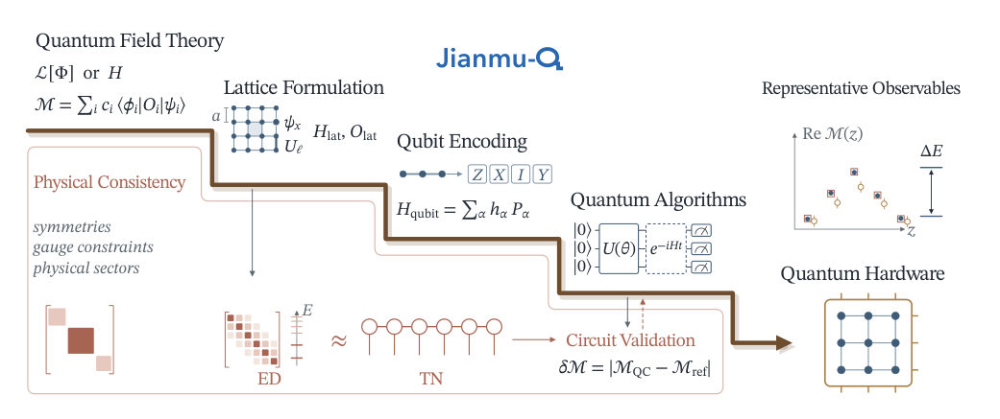
<figcaption class="paper-figure-caption"><b>Fig 1.</b> FIG. 1. Jianmu-Q as a staircase from quantum field theory to quantum hardware. Specialized agents carry field-theory specifications: a Lagrangian or a lattice Hamiltonian, external states, and an observable M [Eq. (1)], through a regularized lattice formulation, a model-specific qubit encoding, and task-dependent circuits (state preparation, optional dynamics [dashed], measurement) to quantum hardware, the intended simulation platform, subject to present device feasibility. Beneath the steps, independent validation comprises physical-consistency checks, ED and TN references for the same regulated finite-lattice problem, and a comparison of noiseless circuit results with them, including...</figcaption>
</figure>
<figure class="paper-figure-card">
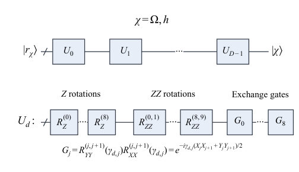
<figcaption class="paper-figure-caption"><b>Fig 2.</b> FIG. 2. Ten-qubit state-preparation ansatz VD(θ) = UD−1...U1U0 for the NJL model. The upper circuit represents the same D-layer ansatz applied to the two orthogonal refer- ence states. After optimization, the two reference states are mapped to the vacuum |Ω⟩and hadron state |h⟩. The vacuum reference state is given by |rΩ⟩= [(|01⟩−|10⟩)/ √</figcaption>
</figure>
<figure class="paper-figure-card">
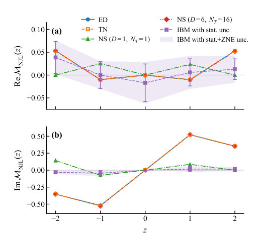
<figcaption class="paper-figure-caption"><b>Fig 3.</b> FIG. 4. NJL light-cone correlator MNJL(z). (a) and (b) show the real and imaginary parts, respectively. Blue circles and or- ange squares denote ED and TN, providing the independent references. Green triangles and red diamonds are noiseless simulation (NS) results at (D, NT ) = (1, 1) and (6, 16), re- spectively. Purple squares are the IBM results obtained from (D, NT ) = (1, 1) circuits and should therefore be compared with the corresponding green NS curve. The purple error bars show statistical uncertainties, while the light-purple band ad- ditionally includes the uncertainty from the ZNE procedure.</figcaption>
</figure>
<figure class="paper-figure-card">
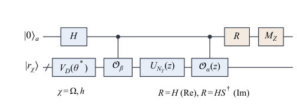
<figcaption class="paper-figure-caption"><b>Fig 4.</b> FIG. 3. Quantum circuit for measuring the NJL light-cone correlator. The external state |χ⟩, with χ = Ω, h, is pre- pared from the reference state |rχ⟩using the optimized ansatz VD(θ∗). The controlled operators Oβ and Oα(z), together with the Trotterized time evolution UNT (z), measure each Pauli-string contribution in Eq. (12). The real and imaginary parts are obtained by choosing R = H and R = HS†, re- spectively, before measuring the ancilla in the computational basis.</figcaption>
</figure>
<figure class="paper-figure-card">
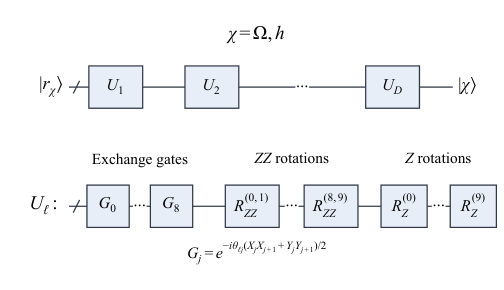
<figcaption class="paper-figure-caption"><b>Fig 5.</b> FIG. 5. State preparation ansatz for the Schwinger model. Each horizontal line represents the ten-qubit register. The up- per circuit applies D layers of the ansatz VD(θ) = UD...U2U1 to each reference state |rχ⟩, with χ = Ω, h. Superscripts on the rotation gates specify the qubit indices on which they act, and each gate has an independent angle in each layer. The exchange gates Gj and the RZZ gates act on adjacent qubits in ascending order of j, followed by single-qubit RZ rotations. Each layer has 28 independent parameters and preserves the total electric charge Q.</figcaption>
</figure>
</div>

<p><strong>Summary.</strong> This paper presents Jianmu-Q, a novel multi-agent framework designed to automate the translation of natural-language Quantum Field Theory descriptions into executable quantum simulation workflows. It tackles the major hurdle of implementing QFT simulations on quantum hardware by handling theoretical formulation, lattice discretization, and circuit design sequentially. The framework demonstrates end-to-end validation by comparing results across multiple simulation methods and actual quantum hardware.</p>
<p><strong>Why it may be interesting.</strong> The systematic, automated pipeline for translating complex, continuum QFT problems into concrete quantum circuit implementations is highly relevant for developing quantum algorithms for high-energy physics simulations.</p>
<details>
<summary>Detailed structure</summary>
<p><strong>Main problem.</strong> The core challenge is bridging the gap between continuum Quantum Field Theory (QFT) descriptions and executable quantum circuits for non-perturbative simulations.</p>
<p><strong>Main result.</strong> The authors introduce Jianmu-Q, a multi-agent framework that successfully automates the end-to-end process, benchmarking on models like NJL and Z2 gauge theory.</p>
<p><strong>Method.</strong> A specialized multi-agent workflow translates natural language QFT descriptions into quantum simulation workflows, involving lattice discretization, qubit mapping, and circuit design.</p>
<p><strong>Model / system.</strong> The framework is tested on various QFTs, including the (1+1)D Nambu-Jona-Lasinio and Schwinger models, and a (2+1)D Z2 gauge theory, which is mapped onto a dual lattice representation.</p>
<p><strong>Key observables.</strong> Quark condensate, $N+2$-point correlation functions, hadron dispersion relation, and the hadronic tensor $W_{\mu
u}(q)$.</p>
<p><strong>Important parameters / regimes.</strong> The complexity increases across the tested theories; convergence is monitored by comparing results across different ansatz depths ($D$) and Trotter steps ($N_T$).</p>
<p><strong>Assumptions / limitations.</strong> The validation checks are performed for the finite lattice, not the continuum limit, and the process relies on the coordination of multiple specialized agents.</p>
<p><strong>Figures summary.</strong> Figure 1 illustrates the overall Jianmu-Q workflow as a staircase from QFT theory to quantum hardware, detailing validation steps against ED and TN results. Figure 8 shows the dual lattice encoding for the Z2 gauge theory.</p>
<p><strong>Paper structure.</strong> The paper details the multi-agent architecture, first by defining the problem (QFT to quantum circuit), then by applying it to specific models (NJL, Z2), and finally demonstrating the end-to-end validation process, including hardware execution.</p>
</details>
<details>
<summary>Abstract</summary>
<p>Quantum computing offers a promising approach to non-perturbative simulations of quantum field theories, particularly for real-time dynamics and systems affected by the sign problem. Yet translating continuum field theories into quantum computations remains a challenging interdisciplinary task. Here we introduce \texttt{Jianmu-Q}, a multi-agent framework that transforms natural-language descriptions of quantum field theories into quantum simulation workflows. Specialized agents handle theoretical formulation, lattice discretization, qubit mapping, and circuit design, while physical consistency checks and independent numerical calculations provide validation throughout the workflow. We benchmark the framework on three field theories of increasing complexity: the $(1+1)$-dimensional Nambu--Jona-Lasinio and Schwinger models, and a $(2+1)$-dimensional $\mathbb{Z}_2$ gauge theory. Across these systems, noiseless quantum-circuit simulations converge toward independent exact-diagonalization and tensor-network results, while selected circuits are executed on IBM quantum hardware, demonstrating an end-to-end, validation-guided approach to quantum simulation of field theories.</p>
</details>
<p><sub><a href="#top">↑ back to top</a></sub></p>

<p><a id="paper-2610.21777"></a></p>
<h3 id="localization-induced-by-sinai-disorder-in-mass-exchange-models"><a href="http://arxiv.org/abs/2610.21777v1">Localization induced by Sinai disorder in mass-exchange models</a></h3>
<p><strong>Authors:</strong> Michele Giusfredi, Luca Avena, Paolo Politi<br>
<strong>Type:</strong> theory · <strong>Category:</strong> statistical mechanics · <strong>PDF:</strong> <a href="https://arxiv.org/pdf/2610.21777v1">https://arxiv.org/pdf/2610.21777v1</a><br>
<strong>Analysis basis:</strong> full PDF text, analyzed in chunks
<strong>Topic relevance:</strong> <code>non-equilibrium universality</code> <strong>3/5</strong> · <code>Frenkel-Kontorova</code> <strong>1/5</strong> · <code>driven-dissipative phase transition</code> <strong>1/5</strong></p>
<div class="figure-strip-hint">↔ Scroll figures horizontally</div>
<div class="paper-figures-scroll">
<figure class="paper-figure-card">
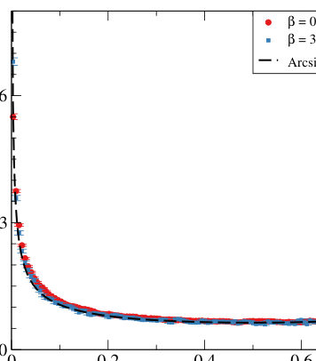
<figcaption class="paper-figure-caption"><b>Fig 1.</b> Fig. 1 Disorder-averaged stationary mass profile on the segment. The plotted mass is nor- malised so that its sum over sites equals N, and therefore represents N ⟨ai⟩. Red circles correspond to β = 0.095, N = 20481, and blue squares to β = 3.4, N = 161. The black dashed curve is the arcsine density farc(x) = [π p</figcaption>
</figure>
<figure class="paper-figure-card">
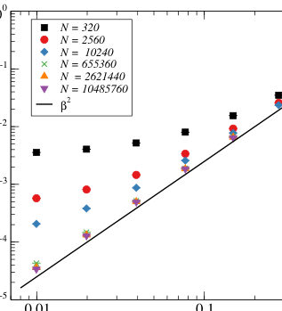
<figcaption class="paper-figure-caption"><b>Fig 2.</b> Fig. 2 Mean mass at the localization peak as a function of β for samples of different sizes N. The straight line corresponds to the slope ⟨ai⋆⟩= β2 (up to a multiplicative constant).</figcaption>
</figure>
<figure class="paper-figure-card">
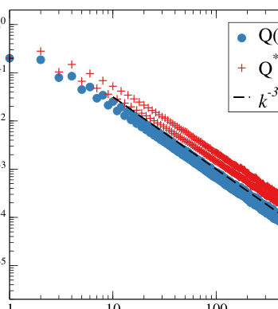
<figcaption class="paper-figure-caption"><b>Fig 3.</b> Fig. 3 Plot of Q(k) and Q∗(k) for β = ln 5 and N=2561. We also draw a k−3/2 tail.</figcaption>
</figure>
<figure class="paper-figure-card">
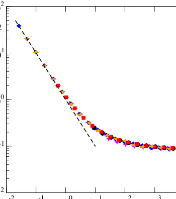
<figcaption class="paper-figure-caption"><b>Fig 4.</b> Fig. 4 Y ∗ 2 (N, β)/β2 versus Nβ2.</figcaption>
</figure>
<figure class="paper-figure-card">
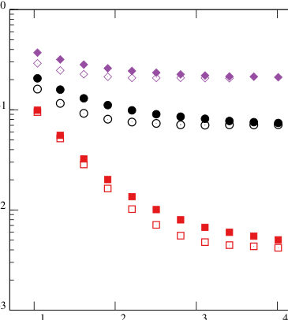
<figcaption class="paper-figure-caption"><b>Fig 5.</b> Fig. 5 Comparison of Y ∗ 2 (N, β) for closed boundary conditions (full symbols) and periodic boundary conditions (open symbols).</figcaption>
</figure>
</div>

<p><strong>Summary.</strong> This paper analyzes a mass-exchange model with quenched disorder, showing that its stationary state is governed by a Gibbs measure related to a random walk potential. The system exhibits distinct scaling regimes controlled by the disorder strength, leading to the derivation of universal limiting distributions, notably the arcsine law, for key physical observables like the localization center.</p>
<p><strong>Why it may be interesting.</strong> The connection between disordered dynamics, random walks, and the emergence of universal scaling laws (like the arcsine law) is highly relevant to understanding energy landscapes in complex quantum systems, such as those modeled by spin glasses or disordered quantum Hamiltonians.</p>
<details>
<summary>Detailed structure</summary>
<p><strong>Main problem.</strong> The paper investigates the localization of mass profiles in a continuous-mass-exchange model subjected to quenched disorder, drawing parallels to Sinai disorder.</p>
<p><strong>Main result.</strong> The stationary mean mass profile is exactly solvable via a Gibbs representation, and the system exhibits three distinct regimes characterized by the scaling of disorder strength, leading to arcsine laws for localization features.</p>
<p><strong>Method.</strong> The analysis employs techniques from statistical mechanics, including deriving zero-current relations, using functional central limit theorems (Donsker's theorem), and analyzing scaling limits related to Brownian motion functionals.</p>
<p><strong>Model / system.</strong> The model is a conservative continuous-mass-exchange process on a 1D segment with quenched disorder in the splitting laws on the bonds. The dynamics are governed by a continuous-time Markov chain, and the stationary state is characterized by a potential landscape.</p>
<p><strong>Key observables.</strong> Stationary mean mass profile $a_i$, macroscopic fluctuations of masses, and the inverse participation ratio for extremal masses.</p>
<p><strong>Important parameters / regimes.</strong> The disorder strength $eta$ and the system size $N$, with the ratio $eta/\sqrt{N}$ controlling the transition between flat, Brownian, and localized regimes.</p>
<p><strong>Assumptions / limitations.</strong> The analysis relies on the assumption of independent, symmetrically distributed random spins ($\omega_i = \pm 1$) defining the disorder realization.</p>
<p><strong>Paper structure.</strong> The paper first establishes the exact solvability of the stationary mean mass profile via a Gibbs measure. It then analyzes the scaling limits in different regimes ($eta/\sqrt{N} 	o 0, 	ext{const}, \infty$), deriving macroscopic fluctuation laws and identifying multiple instances of the arcsine law.</p>
</details>
<details>
<summary>Abstract</summary>
<p>We introduce a conservative continuous-mass-exchange model with quenched disorder in the splitting laws on the bonds of a finite segment. Although the dynamics is generically irreversible, its stationary mean mass profile remarkably turns out to be exactly solvable through an associated birth-and-death chain and has a Gibbs representation in terms of a simple random-walk potential. If $N$ is the number of bonds and $β$ measures the strength of disorder, the parameter $β\sqrt N$ separates an asymptotically flat profile, a Brownian crossover, and a profile localized near the global minimum. We characterize the fluctuations of macroscopic masses and identify arcsine laws for the localization centre, the competition between left and right valleys, and the disorder-averaged mass measure. Furthermore, for the extremal masses, we discuss the emergent limiting random variable in terms of the literature linking finite RW paths seen from its minimum to infinite-horizon walks conditioned to stay positive. Finally, in proximity of the localization transition point $β=0$, we show that the inverse participation ratio for the extremal masses give rises to a scaling with decay of order $k^{-3/2}$ consistent with the scaling limit of the latter conditioned walk. In the same limit, the inverse participation ratio shows a scaling form.</p>
</details>
<p><sub><a href="#top">↑ back to top</a></sub></p>

<p><a id="paper-2610.21949"></a></p>
<h3 id="twist-controlled-thermodynamic-anomalies-in-bilayer-q-state-clock-models"><a href="http://arxiv.org/abs/2610.21949v1">Twist-controlled thermodynamic anomalies in bilayer q-state clock models</a></h3>
<p><strong>Authors:</strong> Ze-Heng Yu, Liang He<br>
<strong>Type:</strong> theory · <strong>Category:</strong> statistical mechanics · <strong>PDF:</strong> <a href="https://arxiv.org/pdf/2610.21949v1">https://arxiv.org/pdf/2610.21949v1</a><br>
<strong>Analysis basis:</strong> full PDF text, analyzed in chunks
<strong>Topic relevance:</strong> <code>analog quantum simulation</code> <strong>3/5</strong> · <code>Frenkel-Kontorova</code> <strong>1/5</strong> · <code>methods for driven-dissipative</code> <strong>1/5</strong></p>
<div class="figure-strip-hint">↔ Scroll figures horizontally</div>
<div class="paper-figures-scroll">
<figure class="paper-figure-card">
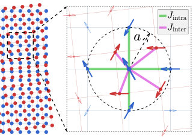
<figcaption class="paper-figure-caption"><b>Fig 1.</b> FIG. 1. Schematic illustration of the twisted bilayer q- state clock model. Left: Two square lattices with a relative twist angle of Θ = 6◦. Red (blue) dots denote lattice sites in the ↑(↓) layer. Right: Enlarged view illustrating the spin ori- entations and couplings. Red (blue) arrows represent spins in the ↑(↓) layer, each restricted to one of q discrete in-plane ori- entations. Green bonds indicate nearest-neighbor intralayer couplings of strength Jintra. Purple bonds indicate interlayer couplings of strength Jinter between sites whose in-plane sep- aration is within one lattice constant a. See the main text for details.</figcaption>
</figure>
<figure class="paper-figure-card">
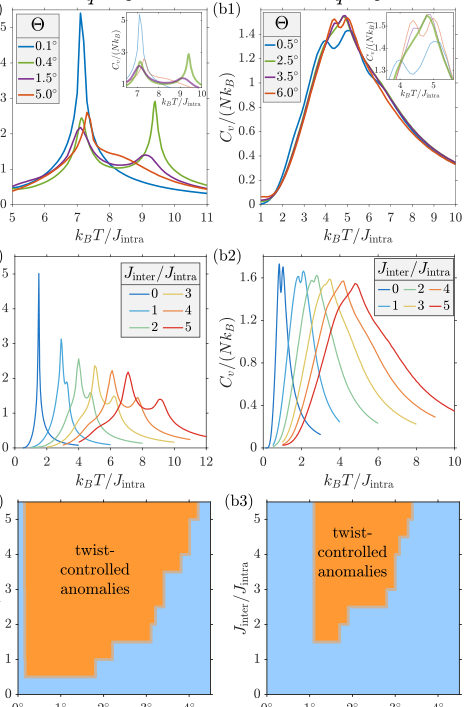
<figcaption class="paper-figure-caption"><b>Fig 2.</b> FIG. 2. Twist-controlled specific-heat anomalies in the bi- layer 3-state (left column) and 5-state (right column) clock models. (a1), (b1) Temperature dependence of the specific heat Cv for selected twist angles Θ at a fixed interlayer cou- pling Jinter/Jintra = 5. The insets show enlarged views of the peak region. For q = 3, increasing the twist angle from 0.1◦to 0.4◦changes the specific-heat curve from a single- peak to a double-peak structure. For q = 5, increasing the twist angle can instead merge the two peaks into a single broad peak. (a2), (b2) Temperature dependence of Cv for se- lected interlayer coupling strengths Jinter/Jintra at fixed twist angles Θ = 1.5◦and 2.5◦,...</figcaption>
</figure>
<figure class="paper-figure-card">
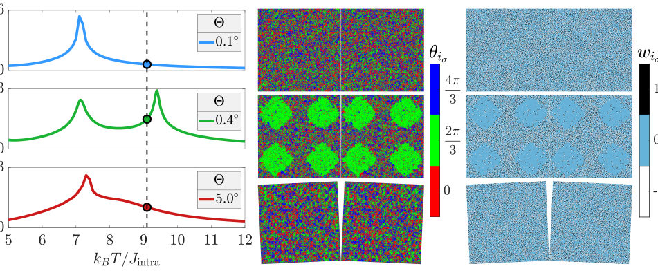
<figcaption class="paper-figure-caption"><b>Fig 3.</b> FIG. 3. Specific heat, representative spin configurations, and local winding-number distributions of the twisted bilayer 3-state clock model at different twist angles Θ, with Jinter/Jintra = 5. Left: Temperature dependence of the specific heat Cv for Θ = 0.1◦(blue), 0.4◦(green), and 5.0◦(red). The dashed line and circles mark the common temperature kBT/Jintra = 9.1 at which the configurations in the middle and right columns are sampled. Middle: Real-space spin configurations, with colors indicating the local spin orientation θiσ. Right: Corresponding local winding-number distributions, where wiσ = +1 and −1 identify vortices and antivortices, respectively, and the blue background denotes...</figcaption>
</figure>
<figure class="paper-figure-card">
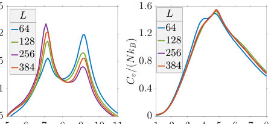
<figcaption class="paper-figure-caption"><b>Fig 4.</b> FIG. 5. Finite-size effects in the twisted bilayer q-state clock model. Panels (a) and (b) show the specific-heat curves for q = 3 at Θ = 1.5◦and q = 5 at Θ = 2.5◦, respec- tively. Each panel contains curves for linear system sizes L = 64, 128, 256, and 384. As L increases, the specific-heat profiles evolve while retaining the anomalous peak features characteristic of each q.</figcaption>
</figure>
<figure class="paper-figure-card">
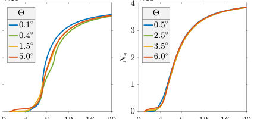
<figcaption class="paper-figure-caption"><b>Fig 5.</b> FIG. 4. Total vortex number Nv on the ↑and ↓layers ver- sus temperature T for the twisted bilayer q-state clock model. Panels (a) and (b) correspond to q = 3 and 5, respectively, with each panel showing four twist angles. In both panels, the curves for different Θ converge to a common value in the low- and high-temperature limits. For q = 3, differences among the curves appear mainly in the intermediate-temperature range.</figcaption>
</figure>
</div>

<p><strong>Summary.</strong> This work demonstrates that twisting the interlayer coupling in a bilayer q-state clock model acts as a powerful control parameter for the system's thermal response. By observing qualitative changes in the specific heat peak structure, the authors suggest that twist can fundamentally modify phase transitions, offering insights into moiré-induced quantum phenomena.</p>
<p><strong>Why it may be interesting.</strong> The concept of using a geometric parameter (twist) to tune the phase transition structure of a quantum spin model is highly relevant for understanding engineered quantum materials and topological phases.</p>
<details>
<summary>Detailed structure</summary>
<p><strong>Main problem.</strong> The study investigates whether the geometric parameter 'twist' can qualitatively reorganize the thermodynamic anomalies observed in discrete spin models, and how these changes relate to the underlying microscopic spin configurations.</p>
<p><strong>Main result.</strong> Twisting acts as a control parameter, causing specific heat peaks to split or merge, which suggests a modification of phase transition behavior, such as the emergence or suppression of an intermediate BKT phase.</p>
<p><strong>Method.</strong> The research employs Monte Carlo simulations to calculate thermodynamic quantities like specific heat ($C_v$) across varying twist angles and coupling strengths.</p>
<p><strong>Model / system.</strong> The system is a ferromagnetic bilayer q-state clock model, described by a Hamiltonian involving intralayer and interlayer couplings, where the twist angle ($\Theta$) controls the relative rotation between the two layers.</p>
<p><strong>Key observables.</strong> Specific heat ($C_v(T)$), spin textures, total vortex/antivortex counts, and layer-averaged magnetization magnitudes.</p>
<p><strong>Important parameters / regimes.</strong> The key parameters are the number of spin orientations ($q$), the interlayer coupling ratio ($J_{	ext{inter}}/J_{	ext{intra}}$), and the twist angle ($\Theta$).</p>
<p><strong>Assumptions / limitations.</strong> The analysis is robust across different boundary conditions (OBC, PBC, CBC) and system sizes, confirming that the observed anomalies are intrinsic to the model.</p>
<p><strong>Figures summary.</strong> Figures illustrate the evolution of $C_v(T)$ for $q=3$ and $q=5$ as a function of $\Theta$, showing peak splitting/merging. Other figures confirm the robustness of these transitions across different $q$ values and boundary conditions.</p>
<p><strong>Paper structure.</strong> The paper systematically analyzes the effect of twist on $C_v(T)$ for specific $q$ values ($q=3, 5$), demonstrating the anomaly. It then confirms the robustness of this effect by testing different boundary conditions and showing continuity across $q=4$ and $q=6$.</p>
</details>
<details>
<summary>Abstract</summary>
<p>Twist has emerged as a geometric means of controlling collective behavior across a wide range of physical systems. Whether it can qualitatively reorganize the thermodynamic anomalies of discrete spin models, and how such changes relate to microscopic spin configurations, remains less explored. Here we demonstrate twist-controlled thermodynamic anomalies in ferromagnetic bilayer q-state clock models using Monte Carlo simulations. With sufficiently strong interlayer coupling, twisting changes the number and structure of specific-heat peaks: a single peak can split into two, or two peaks can merge into one, depending on the number of allowed spin orientations. These changes are nonmonotonic in twist angle and occur over narrower parameter ranges, or are absent, for the larger q values examined. The accompanying spin textures and vortex distributions suggest a physical picture in which moire modulation of the interlayer coupling reorganizes local spin alignment and topological defects. In a representative case, peak splitting coincides with nearly uniform spin regions arranged on the moire scale and a reduced vortex population. These findings identify twist as a control parameter for the collective thermal response of discrete spin systems and raise the possibility of modified phase-transition behavior, including the emergence or suppression of an intermediate Berezinskii-Kosterlitz-Thouless phase.</p>
</details>
<p><sub><a href="#top">↑ back to top</a></sub></p>

<p><a id="paper-2610.20897"></a></p>
<h3 id="casimir-sign-reversal-from-finite-range-bogoliubov-fluctuations"><a href="http://arxiv.org/abs/2610.20897v1">Casimir Sign Reversal from Finite-Range Bogoliubov Fluctuations</a></h3>
<p><strong>Authors:</strong> Fabrizio Canfora, Pablo Pais, Luigi Rosa<br>
<strong>Type:</strong> theory · <strong>Category:</strong> quantum gases · <strong>PDF:</strong> <a href="https://arxiv.org/pdf/2610.20897v1">https://arxiv.org/pdf/2610.20897v1</a><br>
<strong>Analysis basis:</strong> full PDF text, analyzed in chunks
<strong>Topic relevance:</strong> <code>analog quantum simulation</code> <strong>3/5</strong> · <code>Keldysh / 2PI / non-Gaussian methods</code> <strong>1/5</strong></p>
<div class="figure-strip-hint">↔ Scroll figures horizontally</div>
<div class="paper-figures-scroll">
<figure class="paper-figure-card">
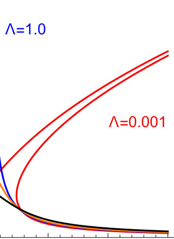
<figcaption class="paper-figure-caption"><b>Fig 1.</b> Figure 1: Primary-resonance response a(σ) obtained from Eq. (29) for a parameter set chosen to enhance the visibility of the Casimir-induced nonlinear bending while keeping the displayed amplitude below unity. The curves show both hardening and softening behavior as Λ is varied, with all values remaining below the finite-momentum instability threshold Λc ≃1091.45; Λ = 1080 probes the stable near-roton regime. The parameters are m = 2.7 × 10−25 kg, Rc = 5 × 10−9 m, d = 20 × 10−9 m, meff = 4 × 10−14 kg, rplate = 9 × 10−6 m, S = π r2 plate, ωr = 2π × 103 rad</figcaption>
</figure>
</div>

<p><strong>Summary.</strong> This theoretical study examines the Casimir energy of a Bose fluid incorporating finite-range quantum corrections. By comparing simple asymptotic approximations with full Poisson-resummed calculations, the authors prove that sign reversals in the Casimir force are physically possible. These reversals are robustly linked to the system's roton physics and can potentially be detected by measuring the nonlinear response of a nanomechanical resonator.</p>
<p><strong>Why it may be interesting.</strong> This work bridges quantum many-body theory (Bogoliubov spectrum) with macroscopic quantum phenomena (Casimir effect) and mechanical detection, providing a concrete, measurable signature of quantum fluid properties in nanostructures.</p>
<details>
<summary>Detailed structure</summary>
<p><strong>Main problem.</strong> The study investigates the zero-temperature Casimir effect in a 3D Bose fluid, specifically analyzing how finite-range corrections to the Bogoliubov spectrum can cause the Casimir energy to reverse sign.</p>
<p><strong>Main result.</strong> Sign reversals of the Casimir energy are confirmed to be possible via Poisson-resummation, occurring robustly in the stable regime near roton softening, rather than being predicted by simple balancing of the leading $L^{-3}$ and $L^{-5}$ asymptotic terms.</p>
<p><strong>Method.</strong> The authors use analytical derivations, including the Euler-Maclaurin formula for asymptotic expansions, and employ the full Poisson summation identity to obtain regulator-independent results for the Casimir energy.</p>
<p><strong>Model / system.</strong> The system is a Bose fluid modeled with a minimal isotropic finite-range repulsive soft-core potential, making it relevant for strongly dipolar atomic gases.</p>
<p><strong>Key observables.</strong> Casimir Energy per unit area ($E(L)$), Casimir Force ($F = -\partial E / \partial L$), and the nonlinear frequency response of a driven nanomechanical resonator.</p>
<p><strong>Important parameters / regimes.</strong> Plate separation ($L$), microscopic finite-range scale ($R_c$), particle density ($
ho$), and the roton instability threshold ($\Lambda_c$).</p>
<p><strong>Assumptions / limitations.</strong> The asymptotic expansion is only valid for large separations ($L \gg R_c$), and the simple balancing of leading terms is insufficient for determining the true sign change point.</p>
<p><strong>Figures summary.</strong> Figures illustrate the primary-resonance response $a(\sigma)$ showing nonlinear bending (hardening/softening) as the coupling constant $\Lambda$ is varied, confirming the Casimir-induced nonlinear bending.</p>
<p><strong>Paper structure.</strong> The paper progresses from deriving the asymptotic energy expansion ($L^{-3}$ and $L^{-5}$ terms) to performing a full Poisson-resummed calculation. It then analyzes the implications of this full result, showing that the sign change is governed by finite-momentum physics (roton sector) and is probed by modeling the resulting nonlinear force law on a mechanical resonator.</p>
</details>
<details>
<summary>Abstract</summary>
<p>We study the zero-temperature Casimir effect of a three-dimensional Bose fluid with finite-range corrections to its Bogoliubov spectrum. Beyond the universal acoustic contribution scaling as $L^{-3}$, the long-distance expansion contains a nonuniversal $L^{-5}$ correction that can compete with the phononic term. We derive this crossover analytically within a minimal isotropic finite-range model and test the asymptotic result against the full dispersion. A regulator-independent Poisson-resummed calculation confirms that sign reversals of the Casimir energy are possible, while showing that the apparent low-coupling zero inferred by balancing only the $L^{-3}$ and $L^{-5}$ terms is not quantitatively controlled. Robust sign changes instead occur in the stable regime close to roton softening, where the Casimir energy acquires an oscillatory finite-momentum contribution. Strongly dipolar atomic gases provide a natural motivation for microscopic interaction lengths in the nanometric regime. We further discuss how the resulting nonlinear force law could be probed through the frequency response of a driven nanomechanical resonator.</p>
</details>
<p><sub><a href="#top">↑ back to top</a></sub></p>

<p><a id="paper-2610.22284"></a></p>
<h3 id="adding-temperature-to-the-adiabatic-connection-hybrid-functionals-for-static-and-dynamic-correlation"><a href="http://arxiv.org/abs/2610.22284v1">Adding Temperature to the Adiabatic Connection: Hybrid Functionals for Static and Dynamic Correlation</a></h3>
<p><strong>Authors:</strong> Florian Matz, Paul G. Graf, Markus Penz, Christian Schilling<br>
<strong>Type:</strong> theory · <strong>Category:</strong> strongly correlated electrons · <strong>PDF:</strong> <a href="https://arxiv.org/pdf/2610.22284v1">https://arxiv.org/pdf/2610.22284v1</a><br>
<strong>Analysis basis:</strong> full PDF text, analyzed in chunks
<strong>Topic relevance:</strong> <code>Keldysh / 2PI / non-Gaussian methods</code> <strong>3/5</strong></p>
<div class="figure-strip-hint">↔ Scroll figures horizontally</div>
<div class="paper-figures-scroll">
<figure class="paper-figure-card">
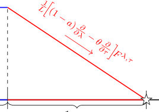
<figcaption class="paper-figure-caption"><b>Fig 1.</b> FIG. 2. The thermally enhanced hybrid is derived from the adiabatic connection linking a thermal KS system ( ) with the fully interacting system ( ). The usual hybrid starting at the KS system ( ) is displayed along the λ-axis. The in- tegrands for the two parts of the path are given in blue and red, with L = p</figcaption>
</figure>
<figure class="paper-figure-card">
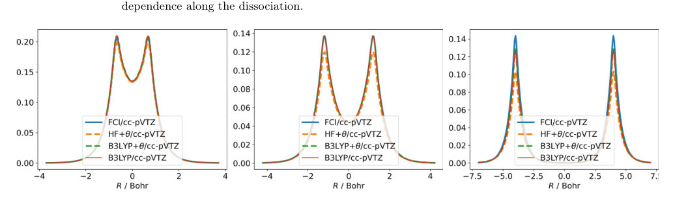
<figcaption class="paper-figure-caption"><b>Fig 2.</b> FIG. 3. Electron density along the internuclear axis in the H2 molecule, at bond distances of 1.40 Bohr (left panel), 2.41 Bohr (middle panel), and 7.98 Bohr (right panel), computed with different methods.</figcaption>
</figure>
<figure class="paper-figure-card">
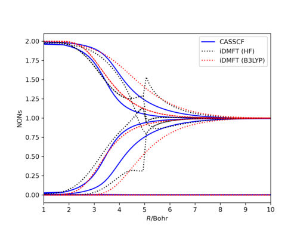
<figcaption class="paper-figure-caption"><b>Fig 3.</b> FIG. 4. Natural occupation numbers of the orbitals 5-28 along the dissociation of dinitrogen, computed with cc-pVDZ.</figcaption>
</figure>
<figure class="paper-figure-card">
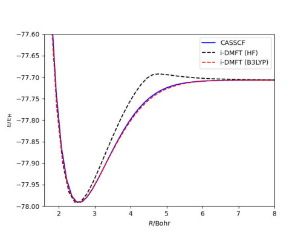
<figcaption class="paper-figure-caption"><b>Fig 4.</b> FIG. 5. Symmetric dissociation curve for ethylene, computed with different methods and the STO-6G basis set, shifted to align the minimum energies.</figcaption>
</figure>
<figure class="paper-figure-card">
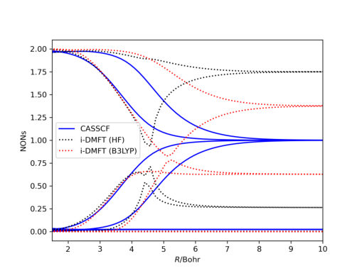
<figcaption class="paper-figure-caption"><b>Fig 5.</b> FIG. 6. Natural occupation numbers along the dissociation of the C–C bond in ethylene, computed with different methods and the STO-6G basis set.</figcaption>
</figure>
</div>

<p><strong>Summary.</strong> This paper introduces thermally enhanced hybrid functionals by extending the adiabatic connection principle of DFT to include a temperature dimension. This framework allows for the simultaneous, systematic treatment of both static and dynamic electron correlation effects. It establishes a powerful, general methodology for improving the accuracy and efficiency of electronic structure calculations for strongly correlated systems.</p>
<p><strong>Why it may be interesting.</strong> This work provides a systematic, low-cost theoretical route to treat complex correlation effects (static and dynamic) that are crucial in understanding strongly correlated materials, bridging concepts from finite-temperature statistical mechanics into electronic structure theory.</p>
<details>
<summary>Detailed structure</summary>
<p><strong>Main problem.</strong> The primary challenge is developing a computationally manageable method to simultaneously capture both static and dynamic electron correlation effects in electronic structure theory.</p>
<p><strong>Main result.</strong> The authors propose 'thermally enhanced hybrid functionals' that systematically treat both correlation types by extending the adiabatic connection concept to include a temperature dimension.</p>
<p><strong>Method.</strong> The method extends DFT by incorporating a temperature parameter ($  au$) into the adiabatic connection, leading to functionals derived from the grand potential ($\Omega_{\lambda,   au}$) in the Gibbs ensemble.</p>
<p><strong>Model / system.</strong> The theory applies to the electronic structure of many-body systems (molecules), described by a Hamiltonian parameterized by interaction strength ($\lambda$) and temperature ($  au$).</p>
<p><strong>Key observables.</strong> Free energy ($F_{\lambda,	au}$), one-particle density ($
ho$), kinetic energy ($T_{\lambda,    au}$), and interaction energy ($W_{\lambda,   au}$).</p>
<p><strong>Important parameters / regimes.</strong> Interaction strength ($\lambda$), effective temperature ($    au$), and mixing parameters ($a$).</p>
<p><strong>Assumptions / limitations.</strong> The method relies on the assumption of v-representability, and the authors discuss the theoretical difficulty regarding the uniqueness of the potential at zero temperature.</p>
<p><strong>Figures summary.</strong> Figure 1 illustrates the general path connecting a thermal Kohn-Sham system to the fully interacting system, while Figure 2 details the two-step approximation used for deriving the hybrid functional.</p>
<p><strong>Paper structure.</strong> The paper establishes the thermodynamic structure of DFT by extending the adiabatic connection to include temperature. It then derives the functional form for the exchange-correlation energy ($E_{	heta}^{xc}$) using a two-step approximation, unifying existing theories like i-DMFT and TAO-DFT.</p>
</details>
<details>
<summary>Abstract</summary>
<p>Capturing static and dynamic electron correlation simultaneously at manageable computational cost remains a key challenge in electronic structure theory. Motivated by the recurring role of effective temperature in self-consistent field methods we extend the adiabatic connection mechanism from density functional theory to include a temperature dimension. This gives rise to thermally enhanced hybrid functionals, in which static correlation is captured via fractional occupations generated by an effective "correlation temperature" within thermal Hartree-Fock, while dynamic correlation is described by established density functional approximations. The framework formally unifies information-density matrix functional theory (i-DMFT) and thermally-assisted-occupation (TAO-)DFT as special cases, clarifying their theoretical basis and the respective prescriptions for the temperature parameter. We assess the performance of several thermally enhanced hybrids for different cases where i-DMFT was previously shown to fail. Furthermore, we discuss and test different schemes for determining the correlation temperature and investigate the accuracy of different such choices for a benchmark set derived from biphenyl. The results help to clarify the achievable balance of accuracy, generality, and efficiency, establishing thermally enhanced hybrids as a systematic route toward low-cost treatment of both correlation types.</p>
</details>
<p><sub><a href="#top">↑ back to top</a></sub></p>

<p><a id="paper-2610.22307"></a></p>
<h3 id="extended-strange-metal-and-superconductivity-in-partially-filled-moire-hubbard-bands"><a href="http://arxiv.org/abs/2610.22307v1">Extended strange metal and superconductivity in partially filled moiré Hubbard bands</a></h3>
<p><strong>Authors:</strong> Yiyu Xia, Yichi Zhang, Zhongdong Han, Hongyuan Li, Brandon Bauer, Kenji Watanabe, Takashi Taniguchi, Wenjin Zhao, Jie Shan, Kin Fai Mak<br>
<strong>Type:</strong> experiment · <strong>Category:</strong> strongly correlated electrons · <strong>PDF:</strong> <a href="https://arxiv.org/pdf/2610.22307v1">https://arxiv.org/pdf/2610.22307v1</a><br>
<strong>Analysis basis:</strong> full PDF text, analyzed in chunks
<strong>Topic relevance:</strong> <code>analog quantum simulation</code> <strong>3/5</strong></p>
<div class="figure-strip-hint">↔ Scroll figures horizontally</div>
<div class="paper-figures-scroll">
<figure class="paper-figure-card">

<figcaption class="paper-figure-caption"><b>Fig 1.</b> Fig. 2e (valid for slow variations of 𝛼 with temperature). The result is also summarized in a contour plot of 𝛼(𝑇) versus 𝜈 and 𝑇 in Fig. 3f. The exponent is close to 𝛼= 1 for 𝑇) ≲𝑇≲3K over the doping density range 0.5 ≲𝜈≲1 at 𝐵= 0T. In contrast, Fermi liquid transport with 𝛼≈2 is observed for 𝜈≳1. The behavior remains similar at 𝐵= 50mT except that a Fermi liquid exponent 𝛼≈2 emerges near the vHS (0.7 ≲𝜈≲0.87) at low temperatures (Fig. 2e and Extended Data Fig. 5). In Extended Data Fig. 6, we also extract the doping density dependence of 𝜌. and the resistivity dynamic range ∆𝜌&#x27;&#x27; ≡𝜌&#x27;&#x27;(𝑇= 2K) −𝜌. . Both quantities show a peak near the vHS. The residual resistivity 𝜌. is small compared to...</figcaption>
</figure>
<figure class="paper-figure-card">

<figcaption class="paper-figure-caption"><b>Fig 2.</b> Figure 1 | Dual-gated tWSe2 devices with varying twist angles. a, Schematic cross section of a dual-gated tWSe2 device. CG, SG, TG and BG denote contact gate, split gate, top gate and bottom gate, respectively; Gr and Pd are few-layer graphite and palladium gate electrodes, respectively; Pt is the platinum contact electrode to tWSe2; hBN stands for hexagonal boron nitride. b, Continuum-model band-structure of the topmost moiré valence band at 𝐸= 0mV/nm and 𝜃= 3.5°. The arrow denotes the van Hove singularity (vHS); the dashed line marks the Fermi level at 𝜈= 0.55. Inset: Hole Fermi surface (red-filled) at ν = 0.55. c, Corresponding density of states (DOS) as a function of 𝜈 at 𝐸= 0mV/nm....</figcaption>
</figure>
<figure class="paper-figure-card">

<figcaption class="paper-figure-caption"><b>Fig 3.</b> Figure 2 | Extended strange metal and superconductivity in 𝟑. 𝟓° tWSe2. a, 𝜌&#x27;&#x27; as a function of 𝜈 and 𝑇 at 𝐵= 0T. The locations for SC1, SC2 and vHS are labelled. b,c, Differential resistance 𝑑𝑉/𝑑𝐼 at 𝜈≈0.55 as a function of DC bias current (𝐼) and 𝑇 at 𝐵= 0T (b) and as a function of 𝐼 and 𝐵 at 𝑇= 30mK (c). d,e, 𝜌&#x27;&#x27; (d) and power-law exponent 𝛼 (e) as a function of 𝑇 at selected fillings (marked by the triangles in a) under 𝐵= 0T (black solid line) and 𝐵= 50mT (yellow dashed line). 𝛼 was extracted by the logarithmic derivative 𝛼(𝑇) ≈</figcaption>
</figure>
<figure class="paper-figure-card">

<figcaption class="paper-figure-caption"><b>Fig 4.</b> Figure 3 | Twist angle evolution of the extended strange metal. a-d, 𝜌&#x27;&#x27; as a function of 𝜈 and T at 𝐸= 0mV/nm and 𝐵= 0T for 𝜃= 3.4°(a), 3.5°(b), 3.65°(c) and 3.9°(d). e-h, 𝛼 as a function of 𝜈 and 𝑇 extracted from the data in a-d. The symmetry-breaking transition temperatures (𝑇)) are plotted for SC1, SC2 and vHS (dashed lines).</figcaption>
</figure>
<figure class="paper-figure-card">

<figcaption class="paper-figure-caption"><b>Fig 5.</b> Figure 4 | Twist-angle-dependent phase diagram at 𝑬≈𝟎mV/nm. a, 𝜌&#x27;&#x27; as a function of 𝜈 and 𝜃 at 𝑇= 30 mK and 𝐵= 0 T obtained from six different devices. b, 𝜃−𝜈 phase diagram constructed from the data in a. Lavender blue and yellow regions mark the extended strange metal and Fermi liquid, respectively. The black dashed line marks the vHS location; symmetry-breaking states appear below the twist angle marked by the pink star. All other states follow the convention in Fig. 1e; their phase boundaries are marked by the symbols for each device. c,d, Hall (𝜌&#x27;(, c) and longitudinal (𝜌&#x27;&#x27;, d) resistivities as a function of 𝐵 at selected temperatures for the 3.4° device at 𝜈≈0.5. At each temperature,...</figcaption>
</figure>
</div>

<p><strong>Summary.</strong> This paper reports the discovery of an extended strange metal (ESM) and a novel superconducting dome ($    ext{SC}2$) in twisted bilayer $ ext{WSe}_2$ moiré semiconductors. By performing detailed transport measurements, the authors argue that the ESM is an intrinsic correlated state, distinct from quantum critical points, opening new avenues for studying partially filled Hubbard bands.</p>
<p><strong>Why it may be interesting.</strong> The work provides experimental evidence for a distinct, intrinsic strange metal state in a clean limit, challenging interpretations based solely on quantum criticality or disorder, which is highly relevant to understanding strongly correlated electron physics.</p>
<details>
<summary>Detailed structure</summary>
<p><strong>Main problem.</strong> The study investigates the emergence of an extended strange metal (ESM) and superconductivity in a partially filled Hubbard band, specifically far away from the Mott insulating state and the van Hove singularity.</p>
<p><strong>Main result.</strong> The authors report observing both an ESM, characterized by T-linear resistivity, and a new superconducting dome ($ ext{SC}2$) in twisted bilayer $ ext{WSe}_2$ under conditions distinct from those near the Mott insulator.</p>
<p><strong>Method.</strong> The research employs electrical transport measurements, analyzing longitudinal and Hall resistivities ($
ho'', 
ho'$) as functions of doping, temperature, and magnetic field, alongside extracting temperature-dependent exponents ($\alpha(T)$).</p>
<p><strong>Model / system.</strong> The physical platform is twisted bilayer $  ext{WSe}_2$ moiré semiconductors, which realize the Hubbard model. The system's physics is controlled by tuning the doping density ($
u$) and the twist angle ($    heta$).</p>
<p><strong>Key observables.</strong> Longitudinal resistivity ($
ho''$), Hall resistivity ($
ho'$), temperature-dependent resistivity exponent ($\alpha(T)$), and superconducting critical fields/currents.</p>
<p><strong>Important parameters / regimes.</strong> Doping density ($
u$), twist angle ($    heta$), temperature ($T$), and electric field ($E$). Key regimes include the ESM ($\alpha \approx 1$) and the superconducting dome ($  ext{SC}2$).</p>
<p><strong>Assumptions / limitations.</strong> The analysis relies on fitting resistivity data to power laws ($
ho'' \propto T^\alpha$) and interpreting transport scaling laws (e.g., quadrature scaling).</p>
<p><strong>Figures summary.</strong> Figures map out the $  heta-
u$ phase diagram showing the ESM region and the $   ext{SC}2$ dome. Other figures detail the temperature and field dependence of resistivity in these correlated regimes.</p>
<p><strong>Paper structure.</strong> The paper systematically maps out the electronic phase diagram of the moiré system, identifying multiple correlated phases (Mott, WMI, ESM, SC). It then focuses on characterizing the ESM state via transport measurements and demonstrating the existence and location of the $  ext{SC}2$ dome.</p>
</details>
<details>
<summary>Abstract</summary>
<p>Moiré semiconductors provide a physical realization of the Hubbard model. Bandwidth-tuned Mott transitions and complex phase diagrams mimicking those of high-temperature superconductors have been demonstrated near a weak Mott insulating state at half-band-filling. The platform also provides an opportunity to explore the physics of a partially filled Hubbard band at doping densities far away from the Mott insulator, a regime that has remained largely unexplored. Here we report the emergence of an extended strange metal (ESM), in both doping density and twist angle, in a partially filled Hubbard band of twisted bilayer WSe2. The ESM is in the clean limit, persists down to 100mK, and spans over multiple symmetry-breaking ground states; it also appears only at small twist angles, where electronic correlations are strong. These observations distinguish the state from the reported strange metals associated with quantum criticality and favor the viewpoint that it is an intrinsic state of matter. We also report the observation of a new superconducting dome being developed from the ESM but far away from both the Mott insulating state and the van Hove singularity of the material. Our work opens the door to exploring the new regime of partially filled Hubbard bands in the clean limit.</p>
</details>
<p><sub><a href="#top">↑ back to top</a></sub></p>

<p><a id="paper-2610.21854"></a></p>
<h3 id="interlocked-vortex-order-in-the-frustrated-math513mathvmath514mathtemath515math-lattice-math516mathcsrb"><a href="http://arxiv.org/abs/2610.21854v1">Interlocked Vortex Order in the Frustrated $A_3$V$_9$Te$_{13}$ Lattice ($A$=Cs,Rb)</a></h3>
<p><strong>Authors:</strong> Zilong Li, H. -Q. Yuan, Xiaoqun Wang, Chao Cao<br>
<strong>Type:</strong> theory · <strong>Category:</strong> strongly correlated electrons · <strong>PDF:</strong> <a href="https://arxiv.org/pdf/2610.21854v1">https://arxiv.org/pdf/2610.21854v1</a><br>
<strong>Analysis basis:</strong> full PDF text, analyzed in chunks
<strong>Topic relevance:</strong> <code>analog quantum simulation</code> <strong>3/5</strong></p>
<div class="figure-strip-hint">↔ Scroll figures horizontally</div>
<div class="paper-figures-scroll">
<figure class="paper-figure-card">

<figcaption class="paper-figure-caption"><b>Fig 1.</b> FIG. 1: (a) Geometry of V-sublattice in Cs3V9Te13. The dominant nearest-neighbor exchange interactions and atom indices are labeled. (b) Schematic illustrations of the coplanar 120◦spin textures with opposite vector chiralities on an isolated triangle. When the triangle is traversed clockwise, the spin directions rotate clockwise by 120◦for the vortex configuration (left panel) and counterclockwise by 120◦for the anti-vortex configuration (right panel). (c-m) Magnetic configurations considered in this work. Noncollinear configurations include: (c) Uniform vortex, (d) uniform anti-vortex, (e)–(h) mixed vortex/anti-vortex configurations, (i) NCL-L, and (j) NCL-S. Collinear configurations...</figcaption>
</figure>
<figure class="paper-figure-card">

<figcaption class="paper-figure-caption"><b>Fig 2.</b> FIG. 2: (a) Pressure dependence of the lattice constants and the dominant magnetic exchange interactions in Cs3V9Te13. (b) Relative canting angle ∆θ obtained from DFT structural relaxation at different pressures, together with the classical Heisenberg-model prediction as a function of α = JLL|S2|/(JSL|S1|). Solid symbols denote the values obtained directly from DFT structural relaxation at different pressures, whereas open symbols represent the canting angles predicted from the exchange interactions extracted at the corresponding pressures. The solid curve includes only the nearest-neighbor exchange interactions, whereas the dashed curve includes both nearest- and next-nearest-neighbor...</figcaption>
</figure>
<figure class="paper-figure-card">

<figcaption class="paper-figure-caption"><b>Fig 3.</b> FIG. 3: (a) Electronic band structure of the nonmagnetic (NM) state of Cs3V9Te13. (b),(c) Orbital-projected band structure and density of states of the vortex phase without SOC. Red (blue) circles denote the weights of the V dyz + dxz (dx2−y2 + dxy + dz2) orbitals. In the DOS, green and gold dashed curves correspond to V atoms belonging to the large and small triangles, respectively. (d) Brillouin zone and Fermi surface of the vortex phase. (e) SOC band structures of the vortex states with different θ1 angles. (f) Electronic band structure of the anti-vortex configuration with SOC.</figcaption>
</figure>
<figure class="paper-figure-card">

<figcaption class="paper-figure-caption"><b>Fig 4.</b> FIG. 4: (a)-(b) Electronic band structures and densities of states of the vortex phase in Cs3V9Te13 at 4 and 8 GPa, respectively, calculated without SOC. (c) Electronic band structures of the vortex phase in Rb3V9Te13. Blue lines and red lines denote the band structures without and with SOC, respectively.</figcaption>
</figure>
</div>

<p><strong>Summary.</strong> This work characterizes the magnetic and electronic properties of the frustrated material $    ext{A}<em 13>3    ext{V}_9    ext{Te}</em>$. Using DFT and Heisenberg models, the authors find that a vortex antiferromagnetic order is the ground state, leading to exotic electronic features like Dirac crossings and flat bands. This establishes the compound as a promising platform for studying frustration-driven chiral magnetism.</p>
<p><strong>Why it may be interesting.</strong> The focus on topological electronic states (Weyl points, flat bands) arising from geometrically frustrated magnetism makes it highly relevant to understanding emergent quantum phenomena in correlated materials.</p>
<details>
<summary>Detailed structure</summary>
<p><strong>Main problem.</strong> The study investigates the complex interplay between geometric frustration, magnetism, and correlated electronic states within the novel $    ext{A}<em 13>3    ext{V}_9    ext{Te}</em>$ lattice.</p>
<p><strong>Main result.</strong> The system naturally stabilizes a robust vortex or anti-vortex antiferromagnetic ground state, which hosts electronic structures exhibiting features like Dirac-like crossings and flat bands.</p>
<p><strong>Method.</strong> The research combines first-principles DFT calculations with Heisenberg model analysis and Monte Carlo simulations to map out the magnetic and electronic ground states.</p>
<p><strong>Model / system.</strong> The physical system is $    ext{A}<em 13>3    ext{V}_9    ext{Te}</em>$), characterized by a frustrated V sublattice forming a Reuleaux-triangle-like structure. The magnetic behavior is modeled using nearest-neighbor Heisenberg interactions.}$ ($    ext{A} =    ext{Cs},    ext{Rb</p>
<p><strong>Key observables.</strong> Magnetic ground state (vortex/anti-vortex), electronic band structure (Weyl points, flat bands), Néel temperature dependence on external fields, and lattice constants under pressure.</p>
<p><strong>Important parameters / regimes.</strong> The comparison between Cs-based (metallic, 6 Weyl points) and Rb-based (SOC opens $\approx 27	ext{-meV}$ gap) compounds is key. Pressure effects are also analyzed.</p>
<p><strong>Assumptions / limitations.</strong> The analysis assumes that the magnetic interactions can be captured by a nearest-neighbor Heisenberg model, and the search was initially constrained to specific symmetries.</p>
<p><strong>Figures summary.</strong> Figures illustrate the V-sublattice geometry, schematic $120^\circ$ spin textures, and the pressure dependence of lattice constants, while tables summarize energy comparisons for different magnetic orders.</p>
<p><strong>Paper structure.</strong> The paper proceeds by establishing the frustrated lattice, calculating the lowest energy magnetic ground state (vortex phase), analyzing the resulting electronic structure (including SOC effects), and finally examining the material's response to external pressure.</p>
</details>
<details>
<summary>Abstract</summary>
<p>Recently synthesized $A_3$V$_9$Te$_{13}$ ($A$ = Cs, Rb) provides a unique platform for exploring the interplay between geometric frustration, magnetism, and correlated electronic states beyond conventional kagome systems. Based on first-principles calculations, we demonstrate that the frustrated V sublattice naturally stabilizes a robust vortex or anti-vortex antiferromagnetic ground state, whose total energy is substantially lower than all other configurations. In addition, the Heisenberg model analysis show strong constraints on the ground state magnetic configuration, such that fixing spin configuration of 1 triangle propagates and fixes all others. The vortex or anti-vortex phase hosts electronic structures reminiscent of kagome metals, including Dirac-like band crossings, van Hove singularities, and flat bands near the Fermi level. Owing to the noncollinear spin texture and quasi-two-dimensional magnetic character, the Néel temperature exhibits an extremely weak dependence on both the magnitude and direction of external magnetic fields, consistent with experimental observations. For Cs-based compound, the ground state band structure is metallic with 6 Weyl points in the BZ; while for the Rb-based compound, spin--orbit coupling opens an approximately 27-meV gap at ambient pressure due to the lifted C$_3$ symmetry. Our results establish $A_3$V$_9$Te$_{13}$ as a promising platform for studying frustration-driven chiral magnetism and its interplay with topological electronic states.</p>
</details>
<p><sub><a href="#top">↑ back to top</a></sub></p>

<p><a id="paper-2610.21765"></a></p>
<h3 id="local-finite-rate-semi-device-independent-randomness-expansion-from-quantum-contextuality"><a href="http://arxiv.org/abs/2610.21765v1">Local finite rate semi device independent randomness expansion from quantum contextuality</a></h3>
<p><strong>Authors:</strong> Dhananjoy Ghosh, Nandana J, Jaskaran Singh<br>
<strong>Type:</strong> theory · <strong>Category:</strong> quantum information and computing · <strong>PDF:</strong> <a href="https://arxiv.org/pdf/2610.21765v1">https://arxiv.org/pdf/2610.21765v1</a><br>
<strong>Analysis basis:</strong> full PDF text, analyzed in chunks
<strong>Topic relevance:</strong> <code>quantum measurements</code> <strong>3/5</strong></p>
<div class="figure-strip-hint">↔ Scroll figures horizontally</div>
<div class="paper-figures-scroll">
<figure class="paper-figure-card">

<figcaption class="paper-figure-caption"><b>Fig 1.</b> FIG. 1. The protocol for RE using contextual correlations in odd N-cycle scenarios.</figcaption>
</figure>
<figure class="paper-figure-card">

<figcaption class="paper-figure-caption"><b>Fig 2.</b> FIG. 2. The protocol for RE using contextual correlations in even N-cycle scenarios.</figcaption>
</figure>
<figure class="paper-figure-card">

<figcaption class="paper-figure-caption"><b>Fig 3.</b> FIG. 3. Expected net randomness expansion rate r as a func- tion of the spot-checking probability q for N = 5. We choose n = 1012 and δ = 3 × 10−5 while the terms which appear in the order parameter in Eq. (13) are ǫEA = ǫs = 10−6 and γ = 1/√n.</figcaption>
</figure>
<figure class="paper-figure-card">

<figcaption class="paper-figure-caption"><b>Fig 4.</b> FIG. 4. Expected net randomness expansion rate r as a func- tion of the violation of the KCBS inequality with N = 5. We choose n = 1012, q = 10−2 and δ = 3 × 10−5 while the terms which appear in the order parameter in Eq. (13) are ǫEA = ǫs = 10−6 and γ = 1/√n.</figcaption>
</figure>
<figure class="paper-figure-card">

<figcaption class="paper-figure-caption"><b>Fig 5.</b> FIG. 5. Expected net randomness expansion rate r as a function of total number of rounds n for N = 5 cycle. We choose q = 10−2, βQ = 0.4460 and δ = 3 × 10−5 while the terms which appear in the order parameter in Eq. (13) are ǫEA = ǫs = 10−6 and γ = 1/√n.</figcaption>
</figure>
</div>

<p><strong>Summary.</strong> This paper introduces a template protocol for generating secure quantum randomness (RE) using only contextual correlations measured by a single, localized party. It achieves semi-device independence (SDI) by leveraging violations of N-cycle Non-Contextuality (NC) inequalities. The method is robust as it incorporates quantifiable imperfections in the measurement devices, making it highly relevant for near-term quantum experiments.</p>
<p><strong>Why it may be interesting.</strong> It provides a concrete, experimentally relevant method to generate quantum randomness using only single-party measurements constrained by contextuality, which is a key area in quantum information security.</p>
<details>
<summary>Detailed structure</summary>
<p><strong>Main problem.</strong> Developing a secure, finite-rate randomness expansion (RE) protocol that relies only on contextual correlations from a single localized party, rather than requiring multiple non-communicating parties.</p>
<p><strong>Main result.</strong> The authors propose a template SDI-RE protocol applicable to arbitrary N-cycle non-contextuality (NC) inequalities, providing a finite-rate security analysis.</p>
<p><strong>Method.</strong> The protocol involves characterizing measurement device imperfections (repeatability, orthogonality) and using the violation of NC inequalities within a specified confidence interval to extract randomness via a quantum-proof extractor.</p>
<p><strong>Model / system.</strong> The model is based on quantum contextuality, certified by violating N-cycle Non-Contextuality (NC) inequalities, applicable to both odd and even cycle structures.</p>
<p><strong>Key observables.</strong> The empirical frequency distribution $ ext{FC}(G)$ relative to the quantum bound $eta_{	ext{QT}}$ and the total deviation parameter $\delta = \delta_{	ext{stat}} + \delta_{	ext{char}}$.</p>
<p><strong>Important parameters / regimes.</strong> The number of measurements $N$, the total number of rounds $n$, and the deviation parameters $\epsilon_{rep}, \epsilon_{orth}, \epsilon'_{orth}$.</p>
<p><strong>Assumptions / limitations.</strong> The protocol assumes memoryless devices and accounts for non-ideal statistics, including deviations from perfect commutativity and repeatability.</p>
<p><strong>Figures summary.</strong> Figures illustrate the specific protocols for RE using contextual correlations in odd and even N-cycle scenarios, detailing the measurement and extraction steps.</p>
<p><strong>Paper structure.</strong> The paper first establishes the need for SDI-RE, then details the template protocol applicable to general N-cycle NC inequalities, providing specific protocols for odd and even N, and finally analyzing the security based on device characterization.</p>
</details>
<details>
<summary>Abstract</summary>
<p>Finite rate randomness expansion (RE) which is secure against quantum adversaries is a crucial information processing task which is well studied in the case of two non-communicating parties sharing Bell non-local correlations in a device independent manner. In this paper we show that contextual correlations with only a single localized party are sufficient for RE in a semi-device independent (SDI) manner. We propose a template SDI-RE protocol which is applicable for arbitrary $N$-cycle non-contextuality (NC) inequalities and derive its RE rate under finite statistics. As a special case, we also highlight the advantages of the situation when RE is constrained by Clauser-Horne-Shimony-Holt (CHSH) inequality but with characterized measurements implemented by only a single party. Our template protocol also incorporates non-ideal statistics which may not satisfy perfect commutativity and perfect repeatability, both of which are necessary in a loophole-free test of NC inequalities. As such, several recent experimental implementations of significantly loophole-free tests of NC inequalities can be modified for secure RE following our approach.</p>
</details>
<p><sub><a href="#top">↑ back to top</a></sub></p>

<p><a id="paper-2610.21000"></a></p>
<h3 id="monoprop-scaling-pauli-and-majorana-propagation-via-anticommutation-indices"><a href="http://arxiv.org/abs/2610.21000v1">monoprop: Scaling Pauli and Majorana propagation via Anticommutation Indices</a></h3>
<p><strong>Authors:</strong> Aaron Miller<br>
<strong>Type:</strong> theory · <strong>Category:</strong> strongly correlated electrons · <strong>PDF:</strong> <a href="https://arxiv.org/pdf/2610.21000v1">https://arxiv.org/pdf/2610.21000v1</a><br>
<strong>Analysis basis:</strong> full PDF text, analyzed in chunks
<strong>Topic relevance:</strong> <code>analog quantum simulation</code> <strong>3/5</strong></p>
<div class="figure-strip-hint">↔ Scroll figures horizontally</div>
<div class="paper-figures-scroll">
<figure class="paper-figure-card">

<figcaption class="paper-figure-caption"><b>Fig 1.</b> Figure 1: K/N scaling intuition. Twelve degree- 4 Majorana monomials (rows) on N = 6 and N = 12 modes, with dots marking occupied positions. In the top panels, the gate reads only the two blue highlighted anticommutation index lists, whose lengths are shown by bars. Doubling the number of modes stretches each of the degree-4 monomials among twice as many lists. Because the operator is evenly supported, these lists have similar lengths (Definition 2), so the gate now reads about half as many entries. By contrast, the dense ver- sion below reads everything, meaning we have double the work with double the modes.</figcaption>
</figure>
<figure class="paper-figure-card">

<figcaption class="paper-figure-caption"><b>Fig 2.</b> Figure 2: Scaling with system size. Single-core run time divided by P</figcaption>
</figure>
<figure class="paper-figure-card">

<figcaption class="paper-figure-caption"><b>Fig 3.</b> Figure 3: Anticommutation index showing K = 7 Majorana monomials on N = 6 modes, with black occupied positions. The generator γ = {4, 7} reads the lists of its two positions (shaded), whose symmetric difference is the anticommuting set (Eq. (5)). Monomials ν2,6,7 occupy neither position, so commute and are never examined, while ν3 occupies both, cancels, and commutes. Monomials ν1,4,5 occupy exactly one and anticommute. The Pauli index is the same structure and differs only in the lists a generator reads (Fig. 7).</figcaption>
</figure>
<figure class="paper-figure-card">

<figcaption class="paper-figure-caption"><b>Fig 4.</b> Figure 4: Strong and weak scaling of monoprop. Distributed propagation of the linear Hubbard model of Appendix H.1, from 128 cores on one node to 8192 cores on 64 nodes. The strong scaling column fixes the number of tracked monomials at 1.6 × 109, 6.1 × 109, or 2.44 × 1010. The weak scaling column holds the monomials per node fixed at 9.6 × 107, 3.85 × 108, or 1.48 × 109. The top row shows wall-clock time against the ideal scaling curves, and the bottom row reports the parallel efficiency. Larger problems maintain their efficiency to more cores.</figcaption>
</figure>
<figure class="paper-figure-card">

<figcaption class="paper-figure-caption"><b>Fig 5.</b> Figure 5: Building and evaluating the surrogate graph. Single-core time and memory cost of building the surrogate graph with a single gradient and energy evaluation, relative to propagation of the same circuit with no graph. The circuit is a 127-qubit heavy-hex kicked-Ising model (Appendix H.4), with Pauli-weight cutoff 6 and no coefficient truncation. Panel (a) shows the wall-clock time of one call and (b) the peak memory above the baseline.</figcaption>
</figure>
</div>

<p><strong>Summary.</strong> This paper presents 'monoprop,' a highly efficient, open-source framework for simulating quantum dynamics by tracking Pauli and Majorana operators. It achieves superior computational scaling, $O(K/N)$, by using an anticommutation index that exploits operator sparsity. This advancement allows for the accurate and scalable simulation of complex quantum models relevant to condensed matter physics.</p>
<p><strong>Why it may be interesting.</strong> The focus on Hamiltonian simulation for strongly correlated models (Hubbard, Ising) using advanced operator algebra techniques is highly relevant for understanding quantum many-body physics.</p>
<details>
<summary>Detailed structure</summary>
<p><strong>Main problem.</strong> Developing an efficient, massively parallel framework to calculate expectation values and gradients for quantum systems simulated using Pauli or Majorana operators.</p>
<p><strong>Main result.</strong> The proposed framework, monoprop, achieves a computational cost scaling of O(K/N) per gate, which is significantly faster than existing O(KN) methods, especially for large systems.</p>
<p><strong>Method.</strong> It introduces an 'anticommutation index' to rapidly identify only the terms that anticommute with a gate, avoiding exhaustive checks and exploiting the sparsity and locality of the operator structure.</p>
<p><strong>Model / system.</strong> The methods are applied to simulate quantum dynamics for systems described by Pauli strings (qubits) or products of Majorana operators (fermions), benchmarking against models like the Hubbard model and kicked-Ising chain.</p>
<p><strong>Key observables.</strong> Expectation values (e.g., $    ext{Tr}(
ho U^\dagger H U)$), energy gradients ($\partial    heta_{p\ell} f_L(   heta)$), and the computational cost per gate.</p>
<p><strong>Important parameters / regimes.</strong> System size ($N$), number of tracked terms ($K$), and the gate angle ($ heta$).</p>
<p><strong>Assumptions / limitations.</strong> The $O(K/N)$ scaling relies on the assumption that the tracked operators are 'evenly supported' relative to the system size.</p>
<p><strong>Figures summary.</strong> Figures illustrate the superior scaling of the index method (monoprop) compared to dense codes, and show the structure of anticommutation indices for Majorana operators.</p>
<p><strong>Paper structure.</strong> The paper introduces the framework, details the anticommutation index technique, and then applies it to calculate expectation values and gradients for various benchmark Hamiltonians (Hubbard, Ising) using structured algorithms for gate generation and scoring.</p>
</details>
<details>
<summary>Abstract</summary>
<p>We introduce monoprop, an open-source, massively parallel operator-propagation framework for fermion and qubit bases. For $N$ qubits or modes, existing codes represent each of the $K$ tracked operator terms (Pauli strings or products of Majorana operators) as a $2N$-bit string, testing each for anticommutation with the gate at $O(KN)$ cost per gate. Here, we introduce the anticommutation index which rapidly looks up the terms anticommuting with a gate. A local gate changes only the terms that touch its sites, and when terms are truncated to act on few sites, only a fraction $\sim1/N$ touch any given qubit or mode, and we use this to prove the time per gate scales as $O(K/N)$. This counterintuitive result tells us that for a fixed number of terms, increasing the number of sites can make things faster. We demonstrate this numerically, and show monoprop scales almost ideally to 8192 cores, tracking $9.5\times10^{10}$ terms. Beyond propagation, we present memory-efficient surrogate graphs, which record one propagation and replay it at new angles, for fast energy re-estimation and parameter gradients, and an efficient method for finding energy-minimising gates and optimal angles for simulating adaptive quantum-chemistry circuits.</p>
</details>
<p><sub><a href="#top">↑ back to top</a></sub></p>

<p><a id="paper-2610.21907"></a></p>
<h3 id="selected-stabilizer-subspaces-for-compact-many-body-wave-functions"><a href="http://arxiv.org/abs/2610.21907v1">Selected Stabilizer Subspaces for Compact Many-Body Wave Functions</a></h3>
<p><strong>Authors:</strong> Maria-Andreea Filip, George H. Booth<br>
<strong>Type:</strong> theory · <strong>Category:</strong> numerical methods · <strong>PDF:</strong> <a href="https://arxiv.org/pdf/2610.21907v1">https://arxiv.org/pdf/2610.21907v1</a><br>
<strong>Analysis basis:</strong> full PDF text, analyzed in chunks
<strong>Topic relevance:</strong> <code>analog quantum simulation</code> <strong>3/5</strong></p>
<div class="figure-strip-hint">↔ Scroll figures horizontally</div>
<div class="paper-figures-scroll">
<figure class="paper-figure-card">

<figcaption class="paper-figure-caption"><b>Fig 1.</b> FIG. 1: Schematic representation of the SSI algorithm. The stabilizer basis is initialized from a single ‘seed’ state σ0. Candidates are then generated as described in Section III B 1 and ranked according to a residual as described in Section III B 2. The top candidate is added to the stabilizer basis and a new trial wavefunction is obtained by diagonalization (see Section III B 3). The process is repeated until the energy change is below some convergence threshold.</figcaption>
</figure>
<figure class="paper-figure-card">

<figcaption class="paper-figure-caption"><b>Fig 2.</b> FIG. 2: Convergence of relative energy error in the SSI procedure for the 1D TFI chain with n = 8, for different transverse field strengths (left to right) and candidate pool sizes at each iteration (top to bottom, controlled by Natt). Solid lines correspond to average values across five independent simulations to show stochastic variability, and shaded areas span the minimum to maximum range, with the different colours denoting different stabilizer initializations as shown. The dashed line corresponds to an equivalent SCI simulation where all states selected in the expansion are single Z-basis configurations. As h increases, the optimal starting point shifts from a linear combination of...</figcaption>
</figure>
<figure class="paper-figure-card">

<figcaption class="paper-figure-caption"><b>Fig 3.</b> FIG. 3: Convergence of SSI relative energy error, overlap magnitude with the ground state and average superposition degree, m, as the expansion increases for the 1D TFI model with n = 8 and |h/J| = 1. Solid lines correspond to average values across five independent simulations and shaded areas span the minimum to maximum range.</figcaption>
</figure>
<figure class="paper-figure-card">

<figcaption class="paper-figure-caption"><b>Fig 4.</b> FIG. 4: Normalized stabilizer expansion length needed to obtain convergence of the energy and fidelity with SSI for the 1D TFI model, with convergence defined as E−EFCI</figcaption>
</figure>
<figure class="paper-figure-card">

<figcaption class="paper-figure-caption"><b>Fig 5.</b> FIG. 5: Evolution of the average stabilizer superposition degree during an SSI calculation for the 12-qubit XXZ and Hubbard models (see Sec. IV C), using symmetry-preserving candidate selection, while also including single Pauli-generated candidates in the Hubbard results. This average superposition degree is defined as ¯m = M −1 t P</figcaption>
</figure>
</div>

<p><strong>Summary.</strong> This paper introduces Selected Stabilizer Interaction (SSI), a novel, classical method to approximate quantum many-body wavefunctions by expanding them in a basis of stabilizer states. It successfully shifts the computational bottleneck from managing exponentially large configuration spaces to managing the sparsity of the stabilizer representation. The results prove the concept using spin models, suggesting a viable path for simulating complex quantum systems beyond the reach of standard configuration interaction methods.</p>
<p><strong>Why it may be interesting.</strong> For theoretical physicists working on many-body dynamics, this offers a powerful, classically tractable alternative to standard exponential basis set expansions, providing a new route for simulating strongly correlated systems.</p>
<details>
<summary>Detailed structure</summary>
<p><strong>Main problem.</strong> The primary challenge addressed is overcoming the exponential growth of the Hilbert space in quantum many-body simulations, which limits high-accuracy calculations.</p>
<p><strong>Main result.</strong> The proposed Selected Stabilizer Interaction (SSI) method successfully shifts the required computational compression from the configurational basis to the stabilizer sparsity, showing strong compression advantages, especially in spin models.</p>
<p><strong>Method.</strong> SSI is a classical, SCI-inspired technique that iteratively constructs a nonorthogonal subspace spanned by selected stabilizer states, allowing for efficient representation of complex wavefunctions.</p>
<p><strong>Model / system.</strong> The method is benchmarked on several quantum many-body models, including the transverse-field Ising, XXZ Heisenberg, and Hubbard models, applicable to general n-qubit quantum states.</p>
<p><strong>Key observables.</strong> Ground-state energies, fidelities, superposition degrees, and the required expansion length (comparing SSI vs. SCI vs. exact diagonalization).</p>
<p><strong>Important parameters / regimes.</strong> System size (n), interaction strengths (e.g., U/t for Hubbard model), and the structure of the Pauli operators used for stabilization.</p>
<p><strong>Assumptions / limitations.</strong> The method assumes that the wavefunction can be accurately represented by a compact, systematically generated set of stabilizer states, though challenges remain in symmetry handling and fermionic systems.</p>
<p><strong>Figures summary.</strong> Figure B1 compares the required expansion length for SSI versus SCI for the 1D Hubbard chain, demonstrating the potential advantage of the stabilizer representation over the configurational one.</p>
<p><strong>Paper structure.</strong> The paper introduces the SSI concept, details the mathematical framework using stabilizer states and Clifford operations, presents algorithms for overlap calculation (STABCIRC, CONJCIRC), and benchmarks the method against established models.</p>
</details>
<details>
<summary>Abstract</summary>
<p>Selected configuration interaction (SCI) obtains accurate many-body solutions by variationally diagonalising the Hamiltonian in a sparse, iteratively selected set of configurations, but can lose compactness when the target state has broad configurational support. We introduce selected stabilizer interaction (SSI), a fully classical, SCI-inspired method that instead iteratively constructs a nonorthogonal subspace spanned by a systematically enlargeable set of selected stabilizer states. A single stabilizer, generated by Clifford operations, can encode a structured superposition of (possibly exponentially) many configurations, shifting the relevant compression from configurational to stabilizer sparsity. We benchmark ground-state energies, fidelities, superposition degrees and required expansion lengths against exact diagonalization and equivalent SCI schemes for the transverse-field Ising, XXZ Heisenberg, and Hubbard models, finding particularly strong compression from the stabilizer representation in the spin models, and increasing advantage with system size for these systems. The results establish a proof of principle for heuristic selected stabilizer diagonalization, while also identifying particular challenges in symmetry handling and effective exploration of the stabilizer space.</p>
</details>
<p><sub><a href="#top">↑ back to top</a></sub></p>

<p><a id="paper-2610.21955"></a></p>
<h3 id="spin-12-heisenberg-diamond-like-decorated-honeycomb-lattice-in-a-magnetic-field-from-the-perspective-of-localized-magnons-and-exact-diagonalization"><a href="http://arxiv.org/abs/2610.21955v1">Spin-1/2 Heisenberg diamond-like decorated honeycomb lattice in a magnetic field from the perspective of localized magnons and exact diagonalization</a></h3>
<p><strong>Authors:</strong> Katarina Karlova, Malo Rouxel, Jozef Strecka, Andreas Honecker<br>
<strong>Type:</strong> theory · <strong>Category:</strong> statistical mechanics · <strong>PDF:</strong> <a href="https://arxiv.org/pdf/2610.21955v1">https://arxiv.org/pdf/2610.21955v1</a><br>
<strong>Analysis basis:</strong> full PDF text, analyzed in chunks
<strong>Topic relevance:</strong> <code>analog quantum simulation</code> <strong>3/5</strong></p>
<div class="figure-strip-hint">↔ Scroll figures horizontally</div>
<div class="paper-figures-scroll">
<figure class="paper-figure-card">

<figcaption class="paper-figure-caption"><b>Fig 1.</b> FIG. 1. (a) Schematic illustration of the spin-1/2 Heisenberg model on a diamond-decorated honeycomb lattice with the green rhombus indicating the unit cell. (b) Ground-state phase diagram in the J2/J1–h/J1 parameter plane, where small yellow (green) ellipses denote singlet (triplet) dimers and large yellow ellipses denote singlet tetramers.</figcaption>
</figure>
<figure class="paper-figure-card">

<figcaption class="paper-figure-caption"><b>Fig 2.</b> FIG. 2. Representative isothermal magnetization curves calculated for six selected values of the interaction ratio J2/J1 = 0.0, 1.4, 1.6, 2.1, 2.6, and 4.0. Zero-temperature results obtained by DMRG (L = 4) and EDL (L = 2) are compared with finite- temperature QMC (L = 6) and FTLM (L = 2) results at T/J1 = 0.1. For J2/J1 = 4.0, the FTLM results are additionally compared at several temperatures with analytical results derived from the effective lattice-gas model.</figcaption>
</figure>
<figure class="paper-figure-card">

<figcaption class="paper-figure-caption"><b>Fig 3.</b> FIG. 3. (a) Magnetic susceptibility χ per spin, (b) entropy per unit cell s, and (c) specific heat c per spin as a function of the magnetic field h/J1 for J2/J1 = 4.0 at three selected temperatures. Symbols show the FTLM results for L = 2, while solid lines denote the effective lattice-gas (LG) results in the thermodynamic limit. The legend in (a) applies to all panels.</figcaption>
</figure>
<figure class="paper-figure-card">

<figcaption class="paper-figure-caption"><b>Fig 4.</b> Figure 3 compares the FTLM results for 32 spins with the thermodynamic-limit lattice-gas description at J2/J1 = 4. The most intriguing features occur at the transition fields h/J1 = 0 and 5. The susceptibility exhibits a single peak at each transition progressively suppressed with increasing temperature, while the entropy behaves similarly with the maxima broadening and gradually increasing with temperature. The specific heat displays a characteristic two-peak structure around h/J1 = 5, whereas only a single peak is observed slightly above zero field. The lattice-gas model reproduces the susceptibility and entropy remarkably well up to T/J1 &lt;∼0.5, while the specific heat is more sensitive...</figcaption>
</figure>
<figure class="paper-figure-card">

<figcaption class="paper-figure-caption"><b>Fig 5.</b> FIG. 4. Specific heat c as a function of the magnetic field h/J1 and temperature T/J1 for J2/J1 = 1.6. (a) FTLM results for L = 2, (b) low-temperature zoom of panel (a), and (c) QMC results for L = 6. Panel (b) uses a different color scale for clarity, with the gray contour marking c = 0.02.</figcaption>
</figure>
</div>

<p><strong>Summary.</strong> This paper thoroughly maps the magnetic phase diagram of a spin-1/2 Heisenberg model on a diamond-decorated honeycomb lattice under a magnetic field. By combining advanced numerical methods like QMC and localized-magnon theory, the authors identify multiple magnetic phases and pinpoint critical behaviors, such as Ising criticality, at field-induced quantum phase transitions.</p>
<p><strong>Why it may be interesting.</strong> The detailed study of phase transitions, critical exponents (Ising behavior), and the successful mapping to an effective classical model provides deep insights into frustrated quantum magnetism, which is relevant for understanding complex quantum materials.</p>
<details>
<summary>Detailed structure</summary>
<p><strong>Main problem.</strong> The study investigates the ground-state phase diagram and finite-temperature magnetic properties of the spin-1/2 Heisenberg model on a complex diamond-decorated honeycomb lattice under an external magnetic field.</p>
<p><strong>Main result.</strong> The system exhibits five distinct magnetic phases (LM, DT, MD, SC, SP) characterized by magnetization plateaus and field-induced transitions, with specific heat signatures revealing Ising critical behavior at certain crossovers.</p>
<p><strong>Method.</strong> The research employs a combination of analytical techniques, including a localized-magnon approach mapping to an effective classical lattice-gas model, alongside advanced numerical methods like DMRG, Lanczos Exact Diagonalization (EDL), and Quantum Monte Carlo (QMC).</p>
<p><strong>Model / system.</strong> The system is the spin-1/2 Heisenberg model defined on a diamond-decorated honeycomb lattice. The Hamiltonian includes antiferromagnetic couplings ($J_1, J_2$) and a Zeeman term ($h$), allowing for the mapping to an effective lattice-gas model in the highly frustrated regime.</p>
<p><strong>Key observables.</strong> Magnetization plateaus, specific heat ($c$), susceptibility, and entropy.</p>
<p><strong>Important parameters / regimes.</strong> Interaction ratio ($J_2/J_1$) and magnetic field ratio ($h/J_1$), as well as temperature ($T/J_1$).</p>
<p><strong>Assumptions / limitations.</strong> The localized-magnon approach is used for the highly frustrated regime, and comparisons are made between finite-size exact diagonalization/mean-field results and the thermodynamic limit lattice-gas model.</p>
<p><strong>Figures summary.</strong> Figures illustrate the schematic lattice, the full ground-state phase diagram, and specific heat ($c$) vs. magnetic field ($h/J_1$) at various temperatures and coupling ratios, highlighting transition features.</p>
<p><strong>Paper structure.</strong> The paper systematically analyzes the phase diagram using multiple computational techniques, comparing results across different frustration regimes and temperatures to pinpoint critical behaviors and phase boundaries.</p>
</details>
<details>
<summary>Abstract</summary>
<p>The spin-$1/2$ quantum Heisenberg model on the diamond-decorated honeycomb lattice in a magnetic field is investigated using complementary analytical and numerical methods. The ground-state phase diagram comprises Lieb-Mattis ferrimagnetic, dimer-tetramer, monomer-dimer, spin-canted, and saturated paramagnetic phases, giving rise to characteristic magnetization plateaus, continuous and discontinuous field-induced transitions. In the highly frustrated regime, a localized-magnon approach based on an effective classical lattice-gas model provides an accurate description of the low-temperature magnetism and thermodynamics in agreement with numerical results. At intermediate frustration, finite-temperature calculations reveal characteristic specific-heat signatures of the field-induced transitions including the development of Ising critical behavior at the field-induced transition between the monomer-dimer and Lieb-Mattis ferrimagnetic phase.</p>
</details>
<p><sub><a href="#top">↑ back to top</a></sub></p>

<p><a id="paper-2610.21842"></a></p>
<h3 id="synchronization-induced-by-stochastic-subsystem-resetting-in-complex-networks"><a href="http://arxiv.org/abs/2610.21842v1">Synchronization induced by stochastic subsystem resetting in complex networks</a></h3>
<p><strong>Authors:</strong> Kevin Paramero-Arias, Alejandro P. Riascos<br>
<strong>Type:</strong> theory · <strong>Category:</strong> statistical mechanics · <strong>PDF:</strong> <a href="https://arxiv.org/pdf/2610.21842v1">https://arxiv.org/pdf/2610.21842v1</a><br>
<strong>Analysis basis:</strong> full PDF text, analyzed in chunks
<strong>Topic relevance:</strong> <code>correlated / nonlocal dissipation</code> <strong>2/5</strong> · <code>driven-dissipative phase transition</code> <strong>2/5</strong> · <code>Keldysh / 2PI / non-Gaussian methods</code> <strong>1/5</strong> · <code>analog quantum simulation</code> <strong>1/5</strong> · <code>methods for driven-dissipative</code> <strong>1/5</strong> · <code>non-equilibrium universality</code> <strong>1/5</strong> · <code>quantum measurements</code> <strong>1/5</strong></p>
<div class="figure-strip-hint">↔ Scroll figures horizontally</div>
<div class="paper-figures-scroll">
<figure class="paper-figure-card">

<figcaption class="paper-figure-caption"><b>Fig 1.</b> FIG. 1. Time evolution of the synchronization order parameters for a network-coupled Kuramoto system with stochastic subsystem resetting. Simulations are performed on a connected Erd˝os–R´enyi network with N = 50 oscillators, connection probability p = 0.5, coupling strength K = 5, and a fraction f = 0.4 of oscillators assigned to the reset subsystem. The natural frequencies are independently drawn from a normal distribution with mean ω0 = 0 and standard deviation σ = 2. The same realization of the natural frequencies is used in all simulations. Panels (a)–(d) correspond to resetting rates λ = 0, 1, 5, and 10, respectively. The curves show the global synchronization order parameter r(t),...</figcaption>
</figure>
<figure class="paper-figure-card">

<figcaption class="paper-figure-caption"><b>Fig 2.</b> Figure 1 shows a representative realization of the dy- namics on a connected Erd˝os–R´enyi network composed of N = 50 oscillators and connection probability p = 0.5. The inset in Fig. 1(a) illustrates the network topology together with its partition into the reset subsystem R and the non-reset subsystem M. A fraction f = 0.4 of the oscillators is randomly assigned to the reset subset, while the remaining nodes belong to the non-reset sub- set. The natural frequencies are independently drawn from the Gaussian distribution with average ω0 = 0 and standard deviation σ = 2. The coupling strength is fixed at K = 5, and the equations of motion are integrated using the Euler method with time step...</figcaption>
</figure>
<figure class="paper-figure-card">

<figcaption class="paper-figure-caption"><b>Fig 3.</b> FIG. 2. Ensemble average of the coupling strength ⟨Kν⟩required to achieve the prescribed stationary synchronization level r(st) NR = ν = 0.95 as a function of the reset fraction f for networks of size N = 100. Panels (a)–(c) correspond to natural frequencies independently drawn from a Gaussian distribution with mean ω0 = 0 and standard deviation σ = 1, whereas panels (d)–(f) correspond to ω0 = 0 and σ = 2. Panels (a) and (d) show Erd˝os–R´enyi networks with link occupation probability p ∈[0.2, 1.0], as indicated by the color bar. Panels (b) and (e) show Watts–Strogatz networks with initial degree k = 6 and rewiring probability p ∈[0, 1], with p indicated by the color bar. Panels (c) and (f)...</figcaption>
</figure>
<figure class="paper-figure-card">

<figcaption class="paper-figure-caption"><b>Fig 4.</b> FIG. 3. Ensemble-averaged stationary synchronization order parameter, ⟨r(st) NR ⟩, as a function of the coupling strength K for networks of size N = 100 with a reset fraction f = 0.4. Panels (a)–(c) correspond to natural frequencies independently drawn from a Gaussian distribution with mean ω0 = 0 and standard deviation σ = 1, whereas panels (d)–(f) correspond to ω0 = 0 and σ = 2. The left, middle, and right columns show results for Erd˝os–R´enyi (p = 0.8), Watts–Strogatz (k = 6, rewiring probability p = 0.1), and Barab´asi–Albert (m = 4) networks, respectively. Each curve is averaged over 100 independent realizations of the natural frequencies while keeping the reset subset R fixed, and...</figcaption>
</figure>
<figure class="paper-figure-card">

<figcaption class="paper-figure-caption"><b>Fig 5.</b> Figure 3 shows the ensemble-averaged stationary syn- chronization order parameter as a function of the cou- pling strength for three representative network topolo- gies. Figures 3(a)–(c) correspond to natural frequencies independently drawn from a Gaussian distribution with mean ω0 = 0 and standard deviation σ = 1, whereas Figs. 3(d)–(f) correspond to ω0 = 0 and σ = 2. The left, middle, and right columns show results for Erd˝os– R´enyi, Watts–Strogatz, and Barab´asi–Albert networks, respectively. The Erd˝os–R´enyi networks are generated with link occupation probability p = 0.8, the Watts– Strogatz networks have initial degree k = 6 and rewiring probability p = 0.1, and the Barab´asi–Albert...</figcaption>
</figure>
</div>

<p><strong>Summary.</strong> This paper analyzes how stochastic resetting of nodes in a complex network can induce and control collective synchronization in coupled oscillators. By analyzing the system in the infinite-rate limit, the authors derive analytical relations connecting coherence to network structure and reset parameters. The work establishes resetting as a powerful mechanism for controlling collective dynamics, potentially leading to phase-locked states.</p>
<p><strong>Why it may be interesting.</strong> The concept of an external, non-local intervention (resetting) inducing global order is analogous to external driving fields or engineered coupling in quantum systems, providing a control mechanism for collective quantum states.</p>
<details>
<summary>Detailed structure</summary>
<p><strong>Main problem.</strong> The study investigates how stochastic resetting of a subset of nodes affects the collective synchronization of coupled oscillators on a complex network.</p>
<p><strong>Main result.</strong> Resetting can induce collective coherence in oscillators that are never directly reset, and this mechanism can drive the system from a rotating synchronized state to a phase-locked state.</p>
<p><strong>Method.</strong> The analysis employs linearization near synchronization, mapping the dynamics to a grounded-Laplacian problem, and developing a mean-field description for the non-linear regime.</p>
<p><strong>Model / system.</strong> The model uses network-coupled oscillators governed by a generalized Kuramoto model on a network defined by an adjacency matrix. The system is divided into a reset subsystem and a non-reset subsystem.</p>
<p><strong>Key observables.</strong> Synchronization level/coherence, global order parameter, and collective angular velocity (to distinguish between phase-locked and rotating states).</p>
<p><strong>Important parameters / regimes.</strong> Resetting fraction, network connectivity, frequency heterogeneity, and the infinite-resetting-rate limit ($\lambda 
ightarrow \infty$).</p>
<p><strong>Assumptions / limitations.</strong> The analysis relies on the infinite-resetting-rate limit and assumes the network is undirected and connected.</p>
<p><strong>Figures summary.</strong> Figures characterize the time evolution of the order parameter and phase, showing transitions between stationary (phase locked) and rotating synchronization regimes based on reset fraction and connectivity.</p>
<p><strong>Paper structure.</strong> The paper progresses from defining the system and the role of resetting, to deriving analytical results in the infinite-rate limit using Laplacian formulations, and finally developing a mean-field theory to characterize the transition between different synchronization states.</p>
</details>
<details>
<summary>Abstract</summary>
<p>We study synchronization in network-coupled oscillators subject to stochastic resetting of a subset of nodes. We show that resetting can induce collective coherence in oscillators that are never directly reset, through the interplay of network structure, frequency heterogeneity, and the organization of the reset subsystem. In the infinite-resetting-rate limit, the reset nodes become effectively pinned to a reference phase, and linearization near synchronization maps the dynamics of the remaining subsystem onto a grounded-Laplacian problem. This formulation yields an analytical relation between the synchronization level and the reset parameters, providing an estimate of the coupling strength required to achieve a prescribed degree of coherence. Beyond the linear regime, we develop a mean-field description in which the reset subsystem acts as an effective ordering field for the remaining oscillators. Numerical simulations across different network topologies confirm these predictions and show that synchronization is enhanced by increasing both the reset fraction and network connectivity. In heterogeneous networks, the placement of reset nodes can strongly influence the synchronization response. For frequency distributions with nonzero mean, resetting competes with the intrinsic collective rotation and can drive the system from a rotating synchronized state to a phase-locked state. These results establish subsystem resetting as a mechanism for inducing and controlling collective synchronization in complex networks.</p>
</details>
<p><sub><a href="#top">↑ back to top</a></sub></p>

<p><a id="paper-2610.21928"></a></p>
<h3 id="synergistic-charging-of-a-quantum-battery-via-dzyaloshinskii-moriya-interaction-and-non-markovian-noise"><a href="http://arxiv.org/abs/2610.21928v1">Synergistic charging of a quantum battery via Dzyaloshinskii-Moriya interaction and non-Markovian noise</a></h3>
<p><strong>Authors:</strong> Si-Yu Zhang, Meng-Long Song, Hai-Tao Dong, Xue-Ke Song, Liu Ye, Dong Wang<br>
<strong>Type:</strong> theory · <strong>Category:</strong> other · <strong>PDF:</strong> <a href="https://arxiv.org/pdf/2610.21928v1">https://arxiv.org/pdf/2610.21928v1</a><br>
<strong>Analysis basis:</strong> full PDF text, analyzed in chunks
<strong>Topic relevance:</strong> <code>methods for driven-dissipative</code> <strong>2/5</strong> · <code>Keldysh / 2PI / non-Gaussian methods</code> <strong>1/5</strong> · <code>analog quantum simulation</code> <strong>1/5</strong> · <code>correlated / nonlocal dissipation</code> <strong>1/5</strong> · <code>driven-dissipative phase transition</code> <strong>1/5</strong> · <code>non-equilibrium universality</code> <strong>1/5</strong> · <code>quantum measurements</code> <strong>1/5</strong> · <code>scars &amp; prethermalization</code> <strong>1/5</strong></p>
<div class="figure-strip-hint">↔ Scroll figures horizontally</div>
<div class="paper-figures-scroll">
<figure class="paper-figure-card">

<figcaption class="paper-figure-caption"><b>Fig 1.</b> FIG. 1. Schematic diagram of the two-qubit open quantum battery model under different charging schemes. The battery consists of two identical two-level systems, initialized in the fully discharged state | ↓↓⟩and driven toward the fully charged state | ↑↑⟩over time t. Both cells are independently driven by a local external charging field Hch with strength Ω, while coupled to localized random tele- graph noise (RTN) environments. Parallel charging scheme: the two cells evolve independently without inter-cell interactions. Collective charging scheme: the cells interact through the internal Hamiltonian Hint.</figcaption>
</figure>
<figure class="paper-figure-card">

<figcaption class="paper-figure-caption"><b>Fig 2.</b> FIG. 2. Exact single-qubit decoherence function Λ(t) versus scaled time Ωt for several dimensionless RTN switching rates γn/Ω, with b/Ω= 5.0. Small switching rates produce damped oscillations. For this pure-dephasing channel, information backflow is identified by intervals in which |Λ(t)| increases, not by the sign of Λ(t) itself.</figcaption>
</figure>
<figure class="paper-figure-card">

<figcaption class="paper-figure-caption"><b>Fig 3.</b> FIG. 3. Transient macroscopic charging dynamics and synergistic enhancement in the DM-extended Ising model (γ = 1, ∆= 0). (a) Normalized ergotropy E(t)/(ℏω0) and (b) normalized average power P(t)/(ℏω0Ω) versus scaled time Ωt. (c) Dimensionless relative syn- ergy factor ηrel(t) and (d) absolute synergy factor ηabs(t)/(ℏω0). Four scenarios are compared at J/Ω= 1.0 and Γeff/Ω= 0.8: the fast-switching RTN collective baseline without DM coupling (D/Ω= 0, γn/Ω= 5.0; dashed gray); the DM-assisted fast- switching RTN protocol (D/Ω= 4.5, γn/Ω= 5.0; red); the slow-switching RTN protocol without DM coupling (D/Ω= 0, γn/Ω= 0.05; blue); and the DM-assisted slow-switching RTN pro- tocol (D/Ω= 4.5, γn/Ω=...</figcaption>
</figure>
<figure class="paper-figure-card">

<figcaption class="paper-figure-caption"><b>Fig 4.</b> FIG. 4. Synergistic charging performance in the DM-extended Ising parameter space. Metrics are evaluated synchronously at topt, de- fined as the time at which the synergistic ergotropy is maximal over the prespecified primary charging interval 0 &lt; Ωt ≤π/2. (a) ηabs/(ℏω0) and (b) dimensionless ηrel versus D/Ωand the RTN memory (switching-rate) parameter −log10(γn/Ω), for which larger values denote slower switching and a longer RTN correlation time. The internal coupling is J/Ω= 1.0. (c,d) Normalized er- gotropy dynamics in the slow-switching, long-memory RTN regime (γn/Ω= 0.05) for (c) D/Ω= 3.2 and (d) D/Ω= 6.0.</figcaption>
</figure>
<figure class="paper-figure-card">

<figcaption class="paper-figure-caption"><b>Fig 5.</b> FIG. 5. Quantitative dressed-channel analysis for the DM-extended Ising model. (a) Positive transition frequencies ωij/Ωof the full driven Hamiltonian at the representative values D/Ω= 0, 0.5, and 4.5. The color scale denotes Cij = P2 n=1 |⟨Ei|σz n|Ej⟩|2; degen- erate transitions at the same frequency are grouped. (b) Normal- ized total dressed-channel spectral weight W (r) tot(D) for the fast- and slow-switching RTN protocols. The parameters are J/Ω= 1, Γeff/Ω= 0.8, γn,fast/Ω= 5.0, and γn,slow/Ω= 0.05. The plot- ted weights are channel diagnostics rather than exact non-Markovian decay rates.</figcaption>
</figure>
</div>

<p><strong>Summary.</strong> This theoretical study investigates how Dzyaloshinskii-Moriya interaction can synergistically enhance the charging efficiency of a quantum battery when subjected to non-Markovian noise. By employing the Burshtein-Kubo formalism, the authors demonstrate that specific slow-switching protocols yield superadditive gains in ergotropy. This highlights the potential of engineered interactions to overcome environmental decoherence in quantum energy storage.</p>
<p><strong>Why it may be interesting.</strong> This work is highly relevant to open quantum systems and quantum thermodynamics, providing concrete mechanisms (DM interaction) to enhance energy harvesting in noisy quantum devices.</p>
<details>
<summary>Detailed structure</summary>
<p><strong>Main problem.</strong> The paper addresses the challenge of protecting quantum batteries (QBs) from environmental noise and investigating how structured environmental memory modifies the charging dynamics.</p>
<p><strong>Main result.</strong> DM-assisted slow-switching protocols yield a superadditive transient ergotropy gain during initial charging, outperforming non-DM controls, with optimal performance found at intermediate DM coupling strengths.</p>
<p><strong>Method.</strong> The study uses the exact Burshtein-Kubo stochastic-Liouville formalism to model the open quantum system dynamics under independent local Random Telegraph Noise (RTN).</p>
<p><strong>Model / system.</strong> The system is a two-spin quantum battery modeled by a Hamiltonian incorporating anisotropic Heisenberg interactions and a Dzyaloshinskii-Moriya (DM) coupling term. The dynamics are governed by coupling to independent RTN environments.</p>
<p><strong>Key observables.</strong> Ergotropy, average charging power, and synergy factors ($\eta_{abs}, \eta_{rel}$).</p>
<p><strong>Important parameters / regimes.</strong> DM coupling strength ($D$), noise amplitude, and charging protocol (fast vs. slow switching).</p>
<p><strong>Assumptions / limitations.</strong> The noise is modeled as independent local Random Telegraph Noise (RTN), allowing for an exact Burshtein-Kubo treatment.</p>
<p><strong>Figures summary.</strong> Figure 1 schematically illustrates the two-qubit open QB model under parallel and collective charging schemes coupled to independent RTN noise. Figure 3 (mentioned in notes) compares ergotropy gains for different charging protocols.</p>
<p><strong>Paper structure.</strong> The paper details the model (Hamiltonian, noise coupling) using the Burshtein-Kubo formalism, analyzes performance metrics like ergotropy, and compares various charging protocols (DM-assisted vs. no-DM) in both Ising and anisotropic XY models.</p>
</details>
<details>
<summary>Abstract</summary>
<p>Protecting quantum batteries from environmental noise remains a challenge. Using exact Burshtein-Kubo equations, we study a two-spin quantum battery with Dzyaloshinskii-Moriya (DM) coupling under indepen dent local longitudinal random telegraph noise (RTN). At a fixed effective noise scale, the DM-assisted slow switching protocol yields a superadditive transient ergotropy gain and near-maximal ergotropy during the initial charging stage, while the no-DM slow-switching control reaches comparable ergotropy only in a later revival. A finite superadditive region persists at fixed RTN amplitude, with protocol-dependent location and gain. In the Ising model, the enhancement is nonmonotonic in DM strength, with intermediate coupling giving near-optimal performance. Dressed-channel analysis associates this enhancement with changes in transition frequencies and longitudinal-noise matrix elements that reduce slow-RTN spectral weight. Superadditivity also persists in the tested anisotropic XY model.</p>
</details>
<p><sub><a href="#top">↑ back to top</a></sub></p>
<hr>
<p>
<a href="index.html">← Index</a>
 · <a href="papers_02.html">← Previous</a> · <a href="papers_04.html">Next →</a>
</p>
<hr>

</body>
</html>
